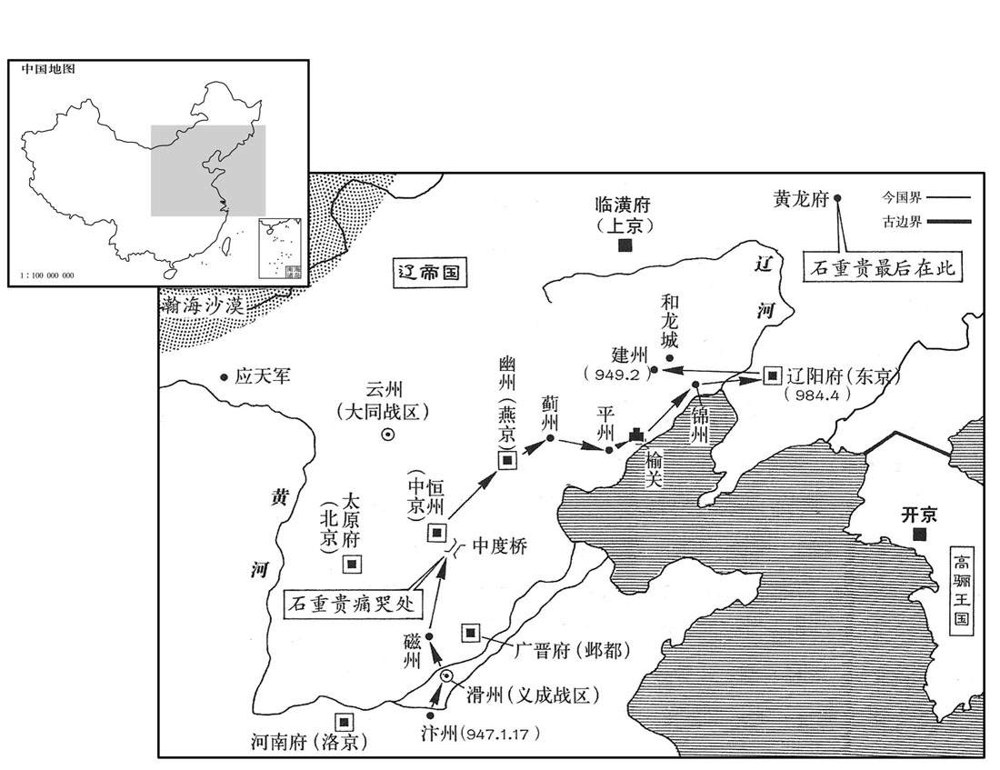
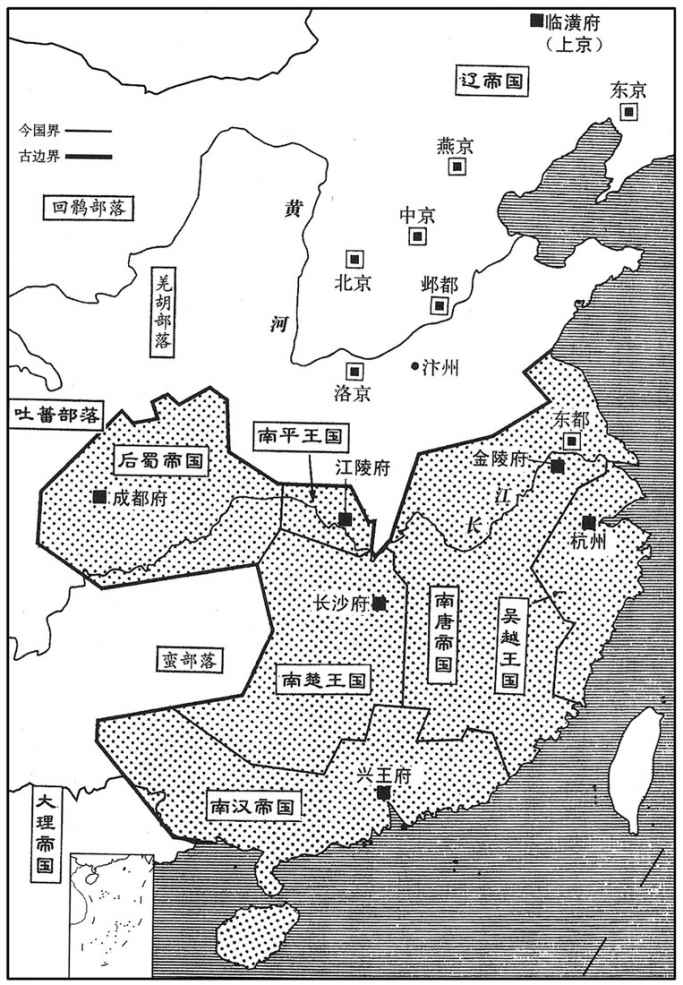
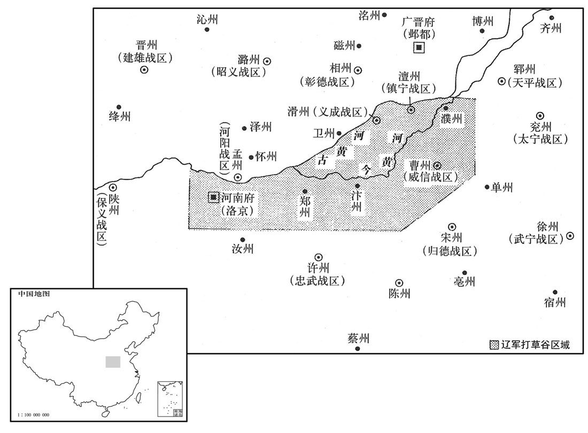
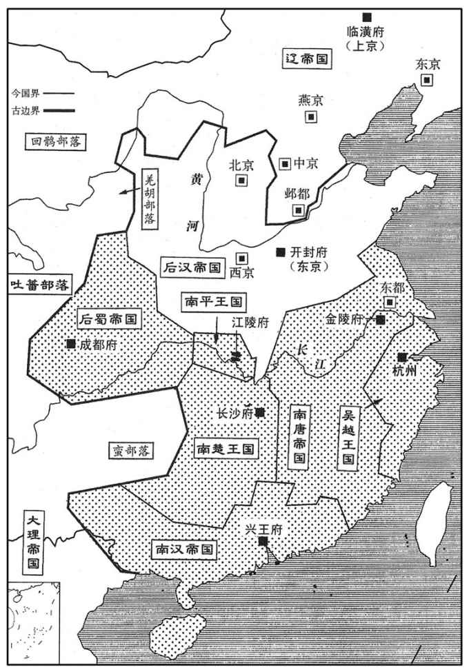
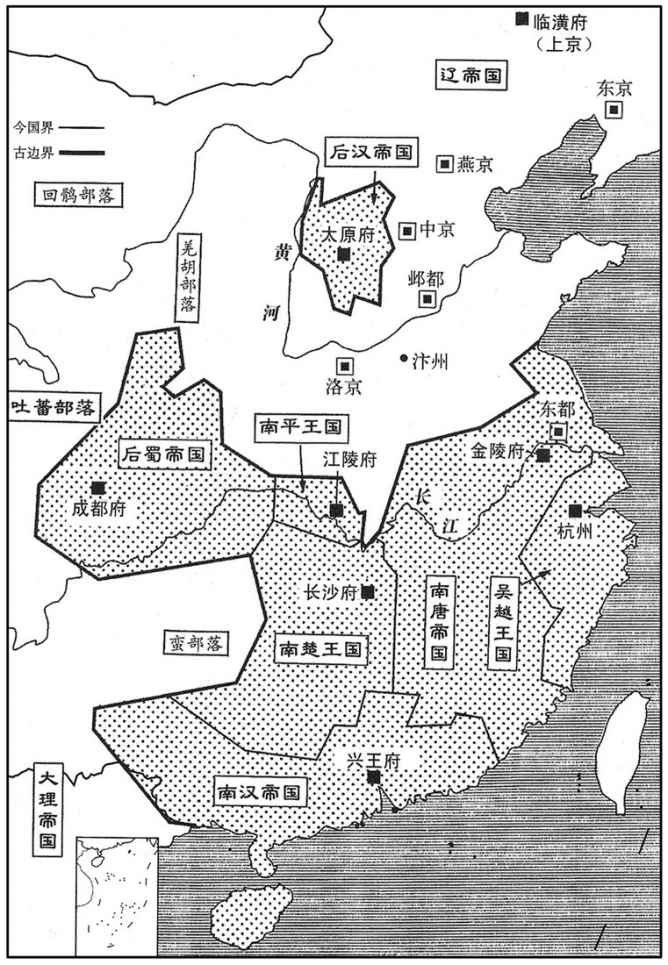
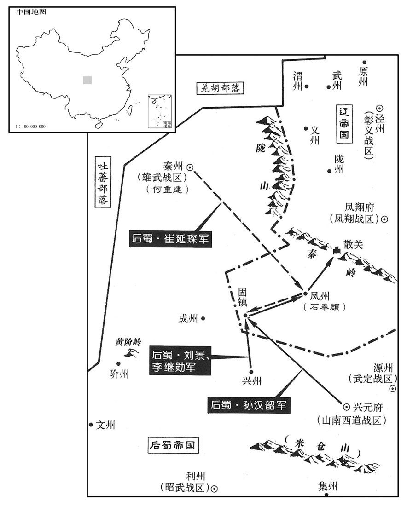
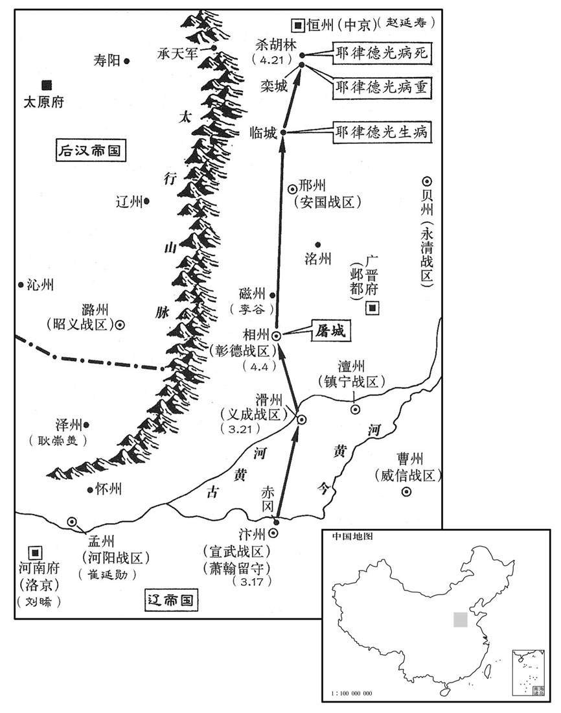

卷次与人物目录 / 卷286
资治通鉴 · 卷第二百八十六【后汉纪一】
公元947年至公元947年 · 原文、白话与胡三省注
本页按胡注本编排保存全卷内容。白话采用本站所据译本，未可靠对应的内容另列说明；事件标题用于定位，并非原书文字。
本卷共110段原文，108段有译文对应，2段缺译或待核对。
卷第二百八十六【后汉纪一】起强圉协洽（丁未）正月，尽四月，尽四月，不满一年。
卷首原文与注释
〔高祖本沙陀部人，居于太原。及得太原。及得中国，自以姓刘，遂言为东汉显宗第八子淮阳王昺之后，国号曰汉。通鉴以前已有汉纪，此以后汉纪书之。〕
高祖睿文圣武昭肃孝皇帝上〔姓刘，名知远；干佑元年，更名暠；其先沙陀部人也。〕
公元947年 · 后汉高祖睿文圣武昭肃孝皇帝天福十二年
天福十二年〔（丁未、九四七）汉复以天福纪年，详见后。〕
上传原文的注释括号有异常，字符原样保留；无法可靠划分的段落默认全文显示。
本年记事分属相邻卷，按原书顺序分别保留：第286卷 · 第287卷。
本年事件索引（现代整理）
- 后晋文武百官在城北辞别出帝后改服迎接契丹主
- 后晋出帝与太后等人在封丘门外迎接契丹主，契丹主拒绝相见
- 契丹主进入大梁安抚百姓并宣称将减赋省役
- 契丹主下令将杀父叛降的杨承勋剐杀并任用其弟杨承信
- 高勋控告张彦泽杀害其家人，张彦泽与傅住儿被处死
- 景延广被押送北返途中自缢身亡
- 契丹封后晋出帝为负义侯并迁往黄龙府，李太后坚持随子同行
- 契丹将后晋出帝一家迁往封禅寺看守，众人受冻挨饿
- 契丹主进驻大梁皇宫并改开封府为汴州
- 赵延寿与张砺推荐李崧，契丹主任其为枢密使并重用冯道
- 契丹向后晋藩镇颁诏，各镇争相称臣而何重建与史匡威拒命
- 契丹主将后晋降军屯驻陈桥，士卒冻饿并怨恨杜重威
- 赵延寿劝契丹主保留降军以防南唐与后蜀，陈桥降卒得以免死
- 契丹主诛杀李彦绅与宦官秦继旻并将家产赐给东丹王之子
- 后晋出帝携太后皇后及子弟等百余人被押送北迁
- 后晋出帝北迁途中缺粮断供，仅李谷迎候并倾家资献给旧主
- 后晋出帝途经中度桥见杜重威军寨，悲叹后恸哭离去
- 后蜀任李继勋为秦州宣慰使
- 契丹主任刘晞为西京留守并重新分派各镇节度使
- 赵在礼入朝时其部将叛乱，留守将领李肃平定军变
- 契丹主责问刘继勋，刘继勋嫁祸冯道后被锁押
- 赵在礼听闻刘继勋被锁后自缢，刘继勋也忧愤而死
- 刘晞在洛阳斥责奚王轻慢赵在礼，洛阳人心稍安
- 契丹主广收各地贡物并纵酒作乐
- 契丹纵胡骑以打草谷为名四出掳掠，河南百姓财物几乎被洗劫一空
- 契丹主命刘昫筹办三十万兵赏赐，刘昫被迫向军民括借钱帛
- 刘知远趁后晋出帝与契丹相互猜忌扩充河东兵力
- 刘知远预料后晋将危而不救援，并派王峻向契丹解释未能入贡
- 刘知远判断契丹只图财物且难久留，主张等其北撤后再行动
- 张从恩想入朝契丹并向刘知远问策，判官高防劝其勿变节
- 荆南高从诲向契丹进贡并派使者劝刘知远称帝
- 南唐立齐王李景遂为皇太弟并调整诸王封号
- 李景遂不理张易规劝，张易摔碎玉杯以谏
- 李景达屡次谏阻南唐主亲近冯延己等佞臣
- 李景达性情刚直，屡谏南唐主并听从张易劝告避开群小
- 南唐遣使庆贺契丹灭晋并请求修复唐代诸陵
- 后晋密州与棣州刺史率众投奔南唐，韩熙载建议趁机进取中原
- 契丹主召后晋百官称帝并改国号年号，大赦天下
- 赵延寿请立自己为皇太子，契丹主拒绝并改任其官职
- 后蜀军攻克固镇并发兵支援何重建进取凤州
- 刘知远听闻何重建降蜀，感叹藩镇外附而自己无所作为
- 刘知远部将劝其称帝，刘知远先称仍要建立功业
- 郭威杨邠等劝刘知远顺应众望即位
- 王晏赵晖等杀死契丹保义节度副使刘愿并推赵晖主政陕州
- 刘知远在晋阳即皇帝位并仍称天福年号
- 后汉高祖下诏停止契丹在各地括取钱帛并处置契丹官员
- 后蜀军攻凤州未克而退保固镇
- 后汉高祖刘知远东行迎接后晋出帝与太后，闻其已过恒州后折返
- 后晋出帝出塞后断粮受辱，冯皇后求毒药欲与其同死
- 契丹主任命降将分别控制昭义彰德河阳等要镇
- 后晋乡兵天威军解散后百姓不愿务农并引发盗乱
- 刘知远回晋阳后采纳李夫人劝谏，以宫中积蓄犒赏将士
- 吴越王钱弘佐逮捕并处死聚集宾客兵器的程昭悦
- 史弘肇攻克代州并杀死契丹任命的王晖
- 药可俦杀死骆从朗并推举张晏洪主持晋州归附后汉
- 晋州百姓杀死契丹派来催征钱帛的赵熙
- 赵晖拒绝契丹任命并向后汉归附，后汉高祖喜称其取得咽喉要地
- 后汉高祖任赵晖侯章等人为节度使
- 高防与王守恩杀赵行迁并举昭义镇归附后汉
- 澶州百姓起兵反抗契丹暴虐官员，契丹主开始考虑撤离河南
- 后蜀主加授何重建同平章事
- 延州将士叛乱后推举高允权据守州城
- 丹州高彦珣杀契丹所任刺史并自领州事
- 述律太后遣使送酒食祝贺契丹主攻灭后晋
- 契丹主封李从益为许王威信节度使，王淑妃辞不赴镇
- 契丹主任张砺和凝为宰相，刘昫因病辞位
- 东方盗贼攻陷宋亳密三州，契丹主急令安审琦符彦卿等归镇
- 符彦卿在埇桥说服李仁恕放弃围攻徐州并解散部众
- 契丹主穿赭袍登崇元殿受百官朝贺
- 后汉高祖派使者安抚农民并令其聚居山谷避乱
- 丹州高彦珣率州归降后汉
- 李昊劝后蜀派孙汉韶急攻凤州以免固镇被契丹夺回
- 契丹主因天气炎热将北返，仅带走有职事的后晋百官
- 契丹改汴州为宣武军并任萧翰为节度使
- 吴越援军余安登陆福州击败南唐军，南唐围城诸军溃败
- 留从效不愿福州归吴越，趁南唐军失利时撤军使福州围攻瓦解
- 吴越余安率军进入福州，李弘达交出所部归其指挥
- 留从效劝退南唐戍军后回泉州，南唐主无力制止
- 契丹主携大量后晋官员军士宫人及府库财物离开大梁
- 后蜀孙汉韶率兵围攻凤州并扼守散关断援
- 吴越军从福州撤回钱塘，吴越王另派军队守福州
- 后汉高祖任皇弟刘崇代理太原府尹
- 契丹主攻克相州后屠杀城中男子并掳走妇女
- 契丹主逼问李谷是否谋反，李谷坚持要求出示证据而获释
- 后汉高祖任刘信史弘肇杨邠郭威等掌管禁军与枢密事务
- 后汉高祖立魏国夫人李氏为皇后
- 契丹主见沿途城邑残破，归咎赵延寿并责问张砺
- 后汉高祖任苏逢吉与苏禹珪为宰相
- 后汉高祖改折从远名为折从阮并任其为永安节度使
- 后汉命史弘肇率军救援遭契丹进攻的潞州
- 后汉高祖任王守恩为昭义节度使并部署诸军经略河南
- 武行德率军杀契丹监军夺取河阳并遣使向后汉归附
- 契丹任方太巡察洛阳，方太先后击退乱军却被武行德诱杀
- 刘晞怀疑潘环驱逐自己而命高谟翰杀死潘环
- 武行友抵达晋阳
- 史弘肇遣马诲击败契丹援军并追击耿崇美等部
- 后汉高祖任武行德为河阳节度使
- 契丹主自承括财打草谷与不遣节度使还镇导致天下叛离
- 南唐主追究福州败军责任，江文蔚弹劾冯延己等人反遭贬谪
- 南唐主将陈觉流放蕲州、冯延鲁流放舒州
- 南唐罢免冯延己并贬魏岑
- 韩熙载多次警告宋齐丘党羽将成祸患，反被贬官
- 凤州防御使石奉頵率全州归降后蜀
- 契丹主耶律德光患病后在杀胡林去世，遗体被剖腹加盐北运
- 契丹主耶律德光病重后在杀胡林去世，遗体被剖腹加盐运回北方
- 赵延寿不满契丹主背约，率先进入恒州迎接契丹诸王
- 契丹诸将密谋拥立兀欲，赵延寿自称代掌南朝而失去控制权
- 契丹袭击承天军，后汉派叶仁鲁击败契丹并收复军镇
- 冀州百姓杀死契丹刺史并推举张廷翰主持州事
- 李崧劝赵延寿暂缓受贺称制，赵延寿最终取消典礼
春，正月，丁亥朔，百官遥辞晋主于城北，〔大梁城之北。〕乃易素服纱帽，迎契丹主，伏路侧请罪。契丹主貂帽、貂裘，衷甲，驻马高阜，命起，改服，抚慰之。〔按欧史，时晋百官迎契丹主于赤冈。〕左卫上将军安叔千独出班胡语，〔按薛史，安叔千，沙陀三部落之种也，故习胡语。〕契丹主曰：「汝安没字邪﹖〔安叔千状貌堂堂，而不通文字，所为鄙陋，人谓之「没字碑」。〕汝昔镇邢州，已累表输诚，我不忘也。」叔千拜谢呼跃而退。〔呼跃盖夷礼，犹华人舞蹈也。〕
春季，正月，丁亥朔（初一），后晋的文武百官在大梁城北远远地向后晋出帝辞别，然后改换白衣纱帽，迎接契丹主耶律德光，全都在路旁伏服请罪。契丹主头戴貂帽，身披貂裘，内裹铁甲，立马于高岗之上，命令归降的百官起立，改换服装，安抚勉慰百官。左卫上将军安叔千一人从百官的行列中站出来，向契丹主耶律德光说了一番胡语。契丹主说：“你就是‘安没字’吗？你过去镇守邢州时，已多次向我表示忠诚，我没忘记啊。”安叔千欢呼跳跃拜谢而退。
晋主与太后已下迎于封丘门外，契丹主辞不见。〔考异曰：汉高祖实录：「少帝帅族候于野，邪律氏疏之。帝指陈前事，乃大臣同谋，皆历历能对，无挠屈色，邪律氏亦假以颜色。」陷蕃记、薛史帝纪、五代通录云：「戎主不与帝相见。」少帝实录：「帝举族待罪于野，虏长面抚之，遗泊封禅寺。」今从陷蕃记。〕
后晋出帝和太后以下在封丘门外迎接，契丹主推辞不见。
契丹主入门，民皆惊呼而走。〔呼，火故翻。〕契丹主登城楼，遣通事谕之曰：「我亦人也，汝曹勿惧！会当使汝曹苏息。〔气纪而复息曰苏；气一出入为息。一曰，更息曰苏。〕我无心南来，汉兵引我至此耳。」〔归罪于杜威等。〕至明德门，下马拜而后入宫。以其枢密副使刘密权开封尹事。〔先易置京尹以弹压华人。〕日暮，契丹主复出，屯于赤冈。〔惧人心未一，未敢居城中。〕
契丹主进入大梁城门时，百姓们都惊呼地跑掉了。契丹主登上城楼，命翻译告诉百姓们：“我也是人，你们不要害怕！我要让你们休养生息。我无心南来，是汉兵引我来到这儿的。”来到明德门，契丹主下马叩拜，然后入宫。命令他的枢密副使刘密为代理开封尹。日落时分，契丹主退出都城，屯兵于赤冈。
戊子，执郑州防御使杨承勋至大梁，责以杀父叛契丹，〔杨承勋囚父以降晋，事见二百八十四卷齐王开运元年。〕命左右脔食之。未几，〔脔，力兖翻。几，居岂翻。〕以其弟右羽林将军承信为平卢节度使，悉以其父旧兵授之。〔既授之以其父旧镇，复授之以其父旧兵。〕
戊子（初二），抓获郑州防御使杨承勋，将他押解到大梁城，斥责他杀父、背叛契丹，命令左右的人把他剁为碎肉吃掉。不久，委任他的弟弟右羽林将军杨承信为平卢节度使，并把他父亲的旧部全都交给他率领。
高勋诉张彦泽杀其家人于契丹主，〔张彦泽杀高勋家见上卷上年。勋为杜威奉降表者也，先已为契丹主所亲，故得诉其事。〕契丹主亦怒彦泽剽掠京城，并傅住儿锁之。〔彦泽剽掠事亦见上卷上年。傅住儿，监彦泽军者也。剽，匹妙翻。〕以彦泽之罪宣示百官，问：「应死否﹖」皆言「应死。」百姓亦投牒争疏彦泽罪。己丑，斩彦泽、住儿于北市，仍命高勋监刑。彦泽前所杀士大夫子孙，皆绖杖号哭，随而诟詈，以杖扑之。〔绖，徒结翻。有亲丧者，绖杖。号，户刀翻。诟，苦候翻，又许候翻。詈，力智翻。扑，普卜翻，击也。〕勋命断腕出锁，〔断，音短。腕，乌实翻。〕剖其心以祭死者。市人争破其脑取髓，〔髓，悉委翻。〕脔其肉而食之。
高勋向契丹主耶律德光控诉张彦泽杀他的家属。契丹主也愤恨张彦泽剽掠京城，将张彦泽和监军傅住儿一起抓了起来。契丹主把张彦泽的罪行向百官宣布，并问：“张彦泽应不应该处死？”百官都说：“应该处死。”全城百姓也争先恐后递上状牒上书张彦泽的罪行。己丑（初三），命将张彦泽、傅住儿押往北市斩首，并命高勋监斩。张彦泽原来所杀的士大夫的子孙，这时都携带丧杖，随后怒骂，用丧杖痛打张彦泽的尸首。高勋命令砍断手腕从铐锁中取出尸体，剖腹取心来祭奠被他杀害的人。市民们争着砸碎他的头，取出他的脑髓，剁碎他的肉并分吃掉。
契丹送景延广归其国，庚寅，宿陈桥，〔九域志：开封府浚仪县有陈桥镇。〕夜，伺守者稍怠，扼吭而死。〔伺，相吏翻。吭，居郎翻；人颈曰吭。〕
契丹押解景延广返归契丹，庚寅（初四）那天，夜宿于陈桥镇，趁看押人懈怠的时候，他掐脖子自杀了。
辛卯，契丹以晋主为负义侯，置于黄龙府。黄龙府，即慕容氏和龙城也。〔欧史曰：自幽州行十余日，过平州；出榆关，行沙碛中，七八日至锦州；又行五六日，过海北州；又行十余日，渡辽水至勃海国铁州；又行七八日，过南海府，遂至黄龙府。按契丹后改黄龙府为隆州，北至混同江一百三十里。又按慕容氏之和龙城，若据晋书及邳道元水经注，当在汉辽西郡界。今晋主陷蕃，渡辽水而后至黄龙府，又其地近混同江，疑慕容氏之和龙城。〕契丹主使谓李太后曰：「闻重贵不用母命以至于此，可求自便，勿与俱行。」太后曰：「重贵事妾甚谨。所失者，违先君之志，绝两国之欢耳。今幸蒙大恩，全生保家，母不随子，欲何所归！」
辛卯（初五），契丹封后晋出帝为负义侯，安置在黄龙府。黄龙府就是原慕容氏的和龙城。契丹主派人对李太后说：“听说重贵是不听母命才落到今天的下场；您可以自行方便，不要和他一起同行。”太后说：“重贵侍奉我很恭谨。他的失误是，违背了先君的意志，断绝了两国的交欢。现在有幸蒙受大恩，保全了身家性命，我做母亲的不随着儿子，又往哪儿寻求归宿呢！”

癸巳，契丹迁晋主及其家人于封禅寺，遣大同节度使兼侍中〔此契丹所授官。〕河内崔廷勋以兵守之。〔宋白曰：崔廷勋本河内人，少陷虏。〕契丹主数遣使存问，〔数，所角翻。〕晋主每闻使至，举家忧恐。〔恐见杀也。〕时雨雪连旬，外无供亿，〔毛居正曰：供儗有储偫之意。供亿，犹供儗也。亿，度也；料度其所须之物，随多少而供之，以待其乏也。〕上下冻馁。太后使人谓寺僧曰：「吾尝于此饭僧数万，〔饭，扶晚翻。〕今日独无一人相念邪！」僧辞以「虏意难测，不敢献食。」〔噫！孰知缁黄变色，其徒所为，有甚于不敢献食者耶！有国有家者，崇奉释氏以求福田利益，可以监矣。〕晋主阴祈守者，乃稍得食。
癸巳（初七），契丹把后晋出帝和他全家人迁到封禅寺，派大同节度使兼侍中河内人崔廷勋领兵看守。契丹主多次派使者前去探望问候；后晋出帝每听说使者到，全家都惊恐担忧。当时雨夹雪下了十几天，寺外断绝了供给，全家老小又冷又饿。李太后派人对寺内的和尚说：“我曾在这里供给数万和尚的斋饭，现在难道就没有一个人记着我吗？”和尚以“契丹用心难料，不敢献上食品”为推辞。后晋出帝只好偷偷地哀求看守，才得到一点食物。
是日，契丹主自赤冈引兵入宫，〔入晋宫。〕都城诸门及宫禁门，皆以契丹守卫，昼夜不释兵仗。〔惧有变也。〕磔犬于门，以竿悬羊皮于庭为厌胜。〔磔，陟格翻。厌，于叶翻。〕契丹主谓〔【章：十二行本「谓」下有「晋」字；乙十一行本同；孔本同；退斋校同。】〕群臣曰：「自今不修甲兵，不市战马，轻赋省役，天下太平矣。」〔谈何容易！斯言甫脱口，而打草榖继之矣，天下果太平乎！〕废东京，降开封府为汴州，尹为防御使。乙未，契丹主改服中国衣冠，百官起居皆如旧制。〔史言契丹主犹知用夏变夷。〕
当天，契丹主率兵从赤冈进入宫中。都城各门和宫禁大门，都派契丹兵把守，昼夜不离兵器。并且在大门前杀狗，在庭院中竖起长竿挂上羊皮作为诅咒。契丹主对群臣说：“从今以后，不整治兵器，不购置战马，减轻赋税，少征徭役，天下太平了！”废除东京建制，降开封府为汴州，原府尹为防御使。乙未（初九）契丹主改穿中原衣冠，文武百官上朝退朝一切均按旧有的典章制度。

赵延寿、张砺共荐李崧之才；会威胜节度使冯道自邓州入朝，契丹主素闻二人名，皆礼重之。〔二人历唐、晋，位极人臣，国亡不能死，视其君如路人，何足重哉！〕未几，以崧为太子太师，充枢密使；道守太傅，于枢密院祗候，以备顾问。
赵延寿、张砺一起荐举李崧的才华；正赶上威胜节度使冯道从邓州入朝，契丹主对二人的名声早有耳闻，都给予礼遇以示重视。不久，就命李崧为太子太师，充任枢密使；命冯道为太傅，在枢密院供职，担任顾问。
契丹主分遣使者，以诏书赐晋之藩镇；晋之藩镇争上表称臣，被召者无不奔驰而至。〔被，皮义翻。〕惟彰义节度使史匡威据泾州不受命。匡威，建瑭之子也。〔史建瑭事晋王克用以及庄宗，皆有战功。〕雄武节度使何重建斩契丹使者，以秦、阶、成三州降蜀。〔史匡威不降契丹，以其地远，契丹兵威不能至也。何重建则以其镇与蜀接境，遂弃辽而附蜀耳。〕
契丹主又分别派出使者，将诏书赐给后晋的各个藩镇；各藩镇都争着上表章称臣，凡被召的没有不快马到达的。只有彰义节度使史匡威据守泾州不接受命令。史匡威是史建瑭的儿子。雄武节度使何重建，把来传诏书的契丹使者杀掉，率领秦、阶、成三州投降后蜀。
初，杜重威既以晋军降契丹，〔杜重威初避晋主重贵名，去「重」，单名「威」。及晋既亡国，重威即复旧名；其忘恩背主，此特末节耳。〕契丹主悉收其铠仗数百万贮恒州，〔贮，丁吕翻。恒，户登翻。〕驱马数万归其国，遣重威将其众从己而南。〔将，即亮翻。〕及河，契丹主以晋兵之众，恐其为变，欲悉以胡骑拥而纳之河流。或谏曰：「晋兵在他所者尚多，彼闻降者尽死，必皆拒命。〔【章：十二行本「命」下有「为患」二字；乙十一行本同。】〕不若且抚之，徐思其策。」契丹主乃使重威以其众屯陈桥。〔陈桥在陈桥门外，有陈桥驿。〕会久雪，官无所给，士卒冻馁，咸怨重威，相聚而泣；重威每出，道旁人皆骂之。
当初，杜威恢复旧名杜重威领着后晋军投降契丹后，契丹主收缴了全部兵器铠甲，有数百万件之多，贮存于恒州；派人将军马数万匹北归其国中；派杜重威率领其部卒跟随自己南下。到了黄河岸边，契丹主看到投降的后晋兵卒太多，怕制造事变，想用自己的骑兵把他们统统赶进黄河。有人劝谏道：“晋兵在各地的还很多，他们听到投降的都死了，一定都会抗拒到底的；不如先安抚他们，慢慢地再想万全之策。”契丹主就派杜重威带领他的降兵屯驻陈桥。正赶上下雪多日，官没给粮饷，士兵们又冷又饿，都怨恨杜重威，相聚而哭泣；杜重威每出帐外，道旁的士兵都骂他。
契丹主犹欲诛晋兵。赵延寿言于契丹主曰：「皇帝亲冒矢石以取晋国，欲自有之乎，将为他人取之乎﹖」〔冒，莫北翻。为，于伪翻；下同。赵延寿志在帝中国，以此言觇契丹主之意，不特为晋兵发也。〕契丹主变色曰：「朕举国南征，于年不解甲，〔天福八年，契丹始攻晋，至是五年。〕仅能得之，岂为他人乎！」〔赵延寿闻契丹主此言，可以绝望矣。〕延寿曰：「晋国南有唐，西有蜀，常为仇敌，皇帝亦知之乎﹖」曰：「知之。」延寿曰：「晋国东自沂、密，西及奏、凤，延袤数千里，〔袤，音茂。〕边于吴、蜀，常以兵戍之。南方暑湿，上国之人不能居也。〔时偏方割据者，谓中原为上国。晋奉契丹，又称契丹为上国。〕他日车驾北归，以晋国如此之大，无兵守之，吴、蜀必相与乘虚入寇，如此，岂非为他人取之乎﹖」契丹主曰：「我不知也。然则柰何﹖」延寿曰：「陈桥降卒，可分以戍南边，则吴、蜀不能为患矣。」契丹主曰：「吾昔在上党，失于断割，悉以唐兵授晋。〔事见二百八十卷晋高祖天福元年。断，丁乱翻。〕既而返为寇雠，北向与吾战，辛勤累年，仅能胜之。今幸入吾手，不因此时悉除之，岂可复留以为后患乎﹖」〔复，扶又翻。〕延寿曰：「向留晋兵于河南，不质其妻子，〔质，音致。〕故有此忧。今若悉徙其家于恒、定、云、朔之间，每岁分番使戍南边，何忧其为变哉！此上策也。」契丹主悦曰：「善！惟大王所以处之。」〔契丹封赵延寿为燕王，故称之为大王。处，昌吕翻。〕由是陈桥兵始得免，分遣还营。
契丹主还是想诛杀后晋降卒。赵延寿对他说：“皇帝亲自率兵冒着飞矢流石夺取了晋国江山，是想自己占有呢，还是想替他人夺取呢？”契丹主脸色突变道：“朕统率全国南征，五年不解衣甲，才刚刚得到，岂能是为他人！”赵延寿说：“晋南面有唐，西面有蜀，常常互为仇敌，皇帝也知道吧？”契丹主答：“知道。”赵延寿又说：“晋国东起沂州、密州，西至秦州、凤州，绵延广袤数千里，边境与吴、蜀相接，常要派兵镇守。南方暑热潮湿，北国人不能居住。他日您车驾北归，而这么辽阔的晋国疆土无兵把守，吴、蜀一定乘虚入侵，这样，难道不是为他人夺取江山吗？”契丹主说：“这是我没料到的。那么应该怎么办呢？”赵延寿说：“陈桥的降兵，可分开来把守南部边疆，这样吴、蜀就不能成为后患了。”契丹主说：“我过去在上党，失策在于当断不断，把唐兵交给晋。没想到反过来与我为仇，北面同我作战，辛苦勤劳好几年，才把他们战胜。现在有幸落在我的手里，不乘这时把他们翦除干净，难道还留作后患吗？”赵延寿说：“过去把晋兵留在河南，不将他们的妻子作为人质，所以才有这种忧患。现在如果把他们的家全迁到恒、定、云、朔各州之间，每年轮番让他们把守南部边疆，何怕他们发生突变！这是上策呵。”契丹主高兴地说：“对！全按你燕王的意见办理！”于是陈桥降兵才得豁免，分别遣返兵营。
契丹主杀右金吾卫大将军李彦绅、宦者秦继旻，以其为唐潞王杀东丹王故也。〔杀东丹王见二百八十卷晋高祖元福元年，唐潞王之清泰三年也。为，于伪翻。〕以其家族赀财赐东丹王之子永康王兀欲。兀欲眇一目，为人雄健好施。〔兀欲始见于此，为后得国张本。施，式豉翻。
两版字句有差异，建议核对原文。
契丹主杀右金吾卫大将军李彦绅和宦者秦继，因为他们曾为后唐潞王杀东丹王的缘故。并把他们家族的资财赏赐给东丹王的儿子永康王兀欲。兀欲瞎一只眼，为人豪迈雄健，慷慨好施。
癸卯，晋主与李太后、安太妃、冯后及弟睿、子延煦、延宝俱北迁，后宫左右从者百余人。〔从，才用翻。〕契丹遣三百骑援送之；〔援送者，送其行以为防援。〕又遣晋中书令赵莹、枢密使冯玉、马军都指挥使李彦韬与之俱。
癸卯（十七日），后晋出帝与李太后、安太妃、冯后与弟石重睿、儿子石延煦、石延宝全部向北迁移，后宫左右随从有一百多人。契丹派三百名骑兵护送、防范，又命原后晋中书令赵莹、枢密使冯玉、马军都指挥使李彦韬与他们同行。
晋主在涂，供馈不继，或时与太后俱绝食，旧臣无敢进谒者。独磁州刺史李榖迎谒于路，相对泣下。榖曰：「臣无状，负陛下。」因倾赀以献。〔天下之士，苟有所负者，其所为必有异于人。磁，墙之翻。〕
后晋出帝在路上，食物供给接不上，有时和太后一同断食，而那些旧日的臣下竟没人敢前来迎接进见的，只有磁州刺史李在路旁边迎接拜谒。君臣相对泣下。李说：“为臣无能，有负于陛下。”于是把自己所有的资财献上。
晋主至中度桥，见杜重威寨，叹曰：“天乎！我家何负，为此贼所破！”恸哭而去。
后晋出帝到达中度桥，望见杜重威的兵寨，感叹道：“天呵！我家何负于人，竟被这个贼人所破！”大哭而去。
晋主至中度桥，见杜重威寨，叹曰：「天乎！我家何负，为此贼所破！」恸哭而去。〔于晋之时，通国上下皆知杜重威之不可用，乃违众用之以致亡国。诗云：「啜其泣矣，何嗟及矣。」今至于恸，庸有及乎！
本段缺少可靠对应白话，原文完整保留；未使用生成译文。
癸丑，蜀主以左千牛卫上将军李继勋为秦州宣慰使。〔蜀以何重建降，遣使宣慰之。〕
癸丑（二十七日），后蜀主孟昶派左千牛卫上将军李继勋为秦州宣慰使。
契丹主以前燕京留守刘晞为西京留守，〔薛史曰：刘晞者，涿州人，陷虏，历官至平章事兼恃中。考异曰：实录作「禧」。或云名晞。今从陷蕃记。〕永康王兀欲之弟留珪为义成节度使，兀〔【章：十二行本「兀」上有「族人郎五为镇宁节度使」十字；乙十一行本同；孔本同；张校同；退斋校同；熊校同。】〕欲姊伲潘聿捻为横海节度使，〔聿，以律翻。捻，乃殄翻。考异曰：周太祖实录：「聿捻」作「聿涅」。今从陷蕃记。〕赵延寿之子匡赞为护国节度使，〔为赵匡赞后以河中归汉张本。〕汉将张彦超为雄武节度使，史佺为彰义节度使，客省副使刘晏僧为忠武节度使，前护国节度使侯益为凤翔节度使，权知凤翔府事〔侯益后亦以凤翔归汉。〕焦继勋为保大节度使。晞，涿州人也。既而何重建附蜀，〔秦州附蜀，张彦超无所诣。〕史匡威不受代，〔史匡威据泾州以拒史佺。〕契丹势稍沮。〔沮，在吕翻。〕
契丹主任命前燕京留守刘为西京留守；任命永康王兀欲的弟弟留为义成节度使、兀欲的姐夫潘聿为横海节度使；任命赵延寿的儿子赵匡赞为护国节度使；任命汉将张彦超为雄武节度使，史为彰义节度使，客省副使刘晏僧为忠武节度使；前护国节度使侯益为凤翔节度使，代理凤翔府事；任命焦继勋为保大节度使。刘是涿州人。不久何重建归附后蜀，史匡威据泾州以拒史取代，契丹之势稍稍受到扼制。
晋昌节度使赵在礼入朝，〔自长安入朝于大梁。〕其裨将留长安者作乱，节度副使建人李肃讨诛之，军府以安。
晋昌节度使赵在礼入朝到大梁，他留在长安的副将作乱，节度副使建州人李肃讨伐诛灭了叛乱，军府得以平安。
晋主之绝契丹也，〔事见二百八十三卷晋高祖天福七年。〕匡国节度使刘继勋为宣徽北院使，颇豫其谋；契丹主入汴，继勋入朝，契丹主责之。时冯道在殿上，继勋急指道曰：「冯道为首相，与景延广实为此谋。臣位卑，何敢发言！」契丹主曰：「此叟非多事者，勿妄引之！」〔冯道以依阿免祸；有国家者，焉用彼相哉！然历事七姓，皆以德望待之，亦持身谨静，有以动其敬心耳。〕命锁继勋，将送黄龙府。
后晋出帝断绝和契丹的往来，匡国节度使刘继勋当时为宣徽北院使，多参预此事的谋划；契丹主进入大梁，刘继勋又来朝见，契丹主责怪他。当时冯道正在殿上，刘继勋急忙指着他说：“冯道是首相，和景延广实际策划的此事。臣的官职卑微，哪里敢说话！”契丹主说：“这老头儿不是多事的人，你不要胡乱攀引他！”命人锁上刘继勋，押送黄龙府。
赵在礼至洛阳，〔旧唐书地理志：自长安东至洛阳八百五十里。〕谓人曰：「契丹主尝言庄宗之乱由我所致。〔谓皇甫晖之乱也。事见二百七十四卷唐明宗天成元年，庄宗之同光四年也。〕我此行良可忧。」契丹遣契丹将述轧、〔书契丹将，以别汉将与勃海将。〕奚王拽，羊列翻。刺，卢达翻。〕勃海将高谟翰戍洛阳，在礼入谒，拜于庭下，拽刺等皆踞坐受之。乙卯，在礼至郑州，〔九域志：自洛阳东至郑州二百六十里。〕闻继勋被锁，大惊，夜，自经于马枥间。〔坜，音历，马栈也。〕契丹主闻在礼死，乃释继勋，继勋忧愤而卒。
赵在礼到洛阳，对人说：“契丹主曾说庄宗之乱由我引起。看来我此行，深可忧虑。”契丹派契丹的将领述轧、奚王拽剌、勃海将领高谟翰驻守洛阳，赵在礼进入谒见。在庭下叩拜，而拽剌等人都蹲坐着受礼。乙卯（二十九日），赵在礼到郑州，听说前往入朝的刘继勋被锁上，惊恐万分，到了夜里，在马房里自杀了。契丹主听说赵在礼自杀了，就释放了刘继勋，刘继勋忧虑愤恨而死。
刘晞在契丹尝为枢密使、同平章事，至洛阳，诟奚王曰：〔诟，苦候翻，又许候翻。〕「赵在礼汉家大臣，尔北方一酋长耳，〔酋，慈秋翻。长，知两翻。〕安得慢之如此！」立于庭下以挫之。由是洛人稍安。
刘在契丹曾为枢密使、同平章事等职，到了洛阳，责骂奚王拽剌道：“赵在礼是汉家的大臣，你只不过是北方的一个酋长罢了，怎敢这样怠慢他！”刘站在庭下大挫他的气焰。于是洛阳人稍得安定。
契丹主广受四方贡献，大纵酒作乐，每谓晋臣曰：「中国事，我皆知之，吾国事，汝曹不知也。」〔契丹主自谓周防之密以夸晋臣。然东丹之来，已胎兀欲夺国之祸，虽甚愚者知之，而契丹主不知也。善觇国者，不观一时之强弱而观其治乱之大致。〕
契丹主广泛接受四面八方送上来的进贡礼品，大肆饮酒作乐，常常对原后晋的臣子说：“你们中原的事，我都知道；可我国的事，你们就不晓得了！”
赵延寿请给上国兵廪食，契丹主曰：「吾国无此法。」乃纵胡骑四出，以牧马为名，分番剽掠，〔剽，妙匹翻。〕谓之「打草榖」。丁壮毙于锋刃，老弱委于沟壑，自东、西两畿〔大梁之属县为东畿，洛阳之属县为西畿，此唐制也。唐制，两京除赤县外，余属县为畿县。〕及郑、滑、曹、濮，数百里间，财畜殆尽。〔郑、滑、曹、濮，皆大梁之旁郡，以及言之，明上文所谓东、西两畿为畿县。濮，博木翻。〕
赵延寿请求供给北国军队的粮饷，契丹主说：“我国没有这个法。”于是就四处放出胡骑兵，以放马为名，四处抢掠，称为“打草谷”。百姓中年轻力壮的死于契丹兵的刀口，年老体弱的填于沟壑，从大梁、洛阳的辖区直到郑、滑、曹、濮各州，几百里地的地面上，财产牲畜几乎抢掠一空。

契丹主谓判三司刘昫曰：「契丹兵三十万，既平晋国，应有优赐，速宜营办。」时府库空竭，昫不知所出，请括借都城士民钱帛，〔都城，大梁都城。〕自将相以下皆不免。又分遣使者数十人诣诸州括借，皆迫以严诛，人不聊生。其实无所颁给，皆蓄之内库，欲辇归其国。于是内外怨愤，始患苦契丹，皆思逐之矣。〔为契丹北归张本。〕
契丹主对判三司刘说：“契丹大军三十万，平掉了晋国，就应该发给丰厚的赏赐，要赶快准备操办。”当时官府仓库里已经空竭，刘不知从何处而出，于是就向都城的士人百姓借钱，自将相以下都免不了。又分别派遣几十名使者到各州中借款，都用严刑相威胁，民不聊生。其实钱本不颁发给契丹士兵，都聚积到皇宫内库里，打算装车运往本国。于是内外怨恨、愤怒，开始感到契丹的祸患痛苦，都想驱逐他们了。
初，晋主与河东节度使、中书令北平王刘知远相猜忌，虽以为北面行营都统，徒尊以虚名，而诸军进止，实不得预闻。〔事见二百八十四卷晋齐王开运元年。〕知远因之广募士卒；〔天福八年，齐王与契丹构隙之初，刘知远已奏募兵矣，事见二百八十三卷。〕阳城之战，诸军散卒归之者数千人，〔阳城之战见二百八十四卷晋齐王开运二年。按阳城之战，晋师大捷，无缘有散卒归河东，此必杜重威降契丹时也。〕又得吐谷浑财畜，〔事亦见开运二年。畜，吁玉翻。〕由是河东富强冠诸镇，〔冠，古玩翻。〕步骑至五万人。
当初，后晋出帝与河东节度使、中书令、北平王刘知远相互猜忌。虽然任命刘知远为北面行营都统，但徒有虚名罢了，各军的行动，实际上他一点都不能干预。刘知远因此大量招募士兵；阳城一战，各军的散兵游勇归附于他的有几千人，又得到吐谷浑的财产牲畜，于是各藩镇中河东最为富强，步兵、骑兵多达五万人。
晋主与契丹结怨，知远知其必危，而未尝论谏。契丹屡深入，知远初无邀遮、入援之志。〔既不据险要以邀遮契丹之兵，又不遣兵入援也。〕及闻契丹入汴，知远分兵守四境以防侵轶。〔轶，徒结翻。〕遣客将安阳王峻〔旧唐书地理志：相州，汉魏郡也，治安阳县。安阳，汉候国，故城在汤阴东。曹魏时，废安阳，并入邺。后周移邺，置县于安阳故城，仍为邺县。隋又改为安阳县，州所治也。若汉魏郡城则在县之西北七里，将，即亮翻。〕奉三表诣契丹主：一，贺入汴；二，以太原夷、夏杂居，戍兵所聚，未敢离镇；〔夏，户雅翻。离，力智翻。〕三，以应有贡物，值契丹将刘九一军自土门西入屯于南川，〔南川，谓晋阳城南之地。〕城中忧惧，俟召还此军，道路始通，可以入贡。契丹主赐诏褒美，及进画，亲加「儿」字于知远姓名之上，仍赐以木拐。胡法，优礼大臣则赐之，如汉赐几杖之比，惟伟王以叔父之尊得之。〔拐，乖买翻，老人拄杖也。欧史曰：王峻持拐归，虏人望之皆避道。〕
后晋出帝和契丹结下怨隙，刘知远判断他必然凶多吉少，但从未加以劝谏。契丹屡次深入进犯，刘知远全然没有拦击、入援的打算。等到听说契丹已占据大梁，刘知远就分兵守护四方边境来防备侵袭。又派遣客将安阳人王峻向契丹主奉上三道表章：一是祝贺契丹进入大梁；二是因太原是夷、夏人杂居共处之处，守防士卒屯聚，所以不敢离镇前往朝贺；三是本应献上贡品，但正值契丹将领刘九一的军队从土门西入屯于南川，太原城中人心忧虑恐惧，待召还此军，道路畅通，才可以送入贡品。契丹主见表章后赐予诏书，称赞表彰，待亲自审批诏书时，又在刘知远的姓名上加上“儿”字，以示亲近，并赐给木。按照胡人的传统，受礼遇优待的大臣，才能赐予木，相当于汉人赐给几杖，只有伟王因为有其叔父的尊贵地位，才得到这种赏赐。
知远又遣北都副留守太原白文珂入献奇绘名马，〔绘，慈陵翻。〕契丹主知知远观望不至，及文珂还，〔还，从宣翻，又如字。〕使谓知远曰：「汝不事南朝，又不事北朝，意欲何所俟邪﹖」〔朝，直遥翻。〕藩汉孔目官郭威言于知远曰：「虏恨我深矣！王峻言契丹贪残失人心，必不能久有中国。」
刘知远又派遣北都副留守太原人白文珂献上珍奇的丝织品和名贵的马匹。契丹主知刘知远观望不到，等白文珂回太原时，契丹主让他告诉刘知远：“你既不奉事南朝，又不奉事北朝，你打算等什么呢？”蕃汉孔目官郭威对刘知远说：“胡虏对我们怨恨很深呵！王峻说契丹贪婪残暴失掉人心，一定不能长久占据中原。”

或劝知远举兵进取。知远曰：「用兵有缓有急，当随时制宜。今契丹新降晋兵十万，虎据京邑，未有他变，岂可轻动哉！且观其所利止于货财，货财既足，必将北去。况冰雪已消，势难久留，宜待其去，然后取之，可以万全。」〔刘知远料之审矣，所以举兵南向，契丹不能与之争。〕
有人劝刘知远起兵进攻。刘知远说：“用兵有缓有急，应当因时采取合适的策略。现在契丹刚刚招降了晋国的十万兵马，像老虎一样雄踞着都城，形势没有其它的变化，怎能轻举妄动呢！况且观察他们所贪图的无非是钱财物品，钱财物品得足了，一定要向北回国的。况且现在冰雪已消，气候转暖，他们必然难以久留，应等他们退去，再去占领那里，才可确保万无一失。”
昭义节度使张从恩，以地迫怀、洛，〔昭义治潞州。自潞州至泽州，夕至怀州渡河，则洛州河南府。旧唐书地理志：潞州至洛州四百七十里。〕欲入朝于契丹，遣使谋于知远，知远曰：「我以一隅之地，安敢抗天下之大！君宜先行，我当继往。」从恩以为然。判官高防谏曰：「公晋室懿亲，〔按五代会要，晋少帝前妃张氏，天福八年进册皇后。张从恩盖后族也。〕不可轻变臣节。」从恩不从。左骁卫大将军王守恩，与从恩姻家，时在上党，从恩以副使赵行迁知留后，〔副使者，节度副使也。〕牒守恩权巡检使，与高防佐之。〔【章：十二行本「之」下有「遂行」二字；乙十一行本同。】〕守恩，建立之子也。〔王建立事康明宗见亲任，及事晋高祖。〕
昭义节度使张从恩，因为地近怀、洛二州，想向契丹朝觐，派使者先去和刘知远商量。刘知远说：“我们以一隅之地，怎么敢与偌大的天下抗争！您可先行一步，我当随后就去。”张从恩信以为真。判官高防劝谏道：“您身为晋室的懿亲，切不可轻易地改变为臣的气节。”张从恩不听从。左骁卫大将军王守恩和张从恩是亲家，当时在上党，张从恩命节度副使赵行迁主持留后事务，发公文派王守恩代理巡检使，与高防共同辅佐赵行迁。王守恩是王建立的儿子。
荆南节度使高从诲遣使入贡于契丹，契丹遣使以马赐之。从诲亦遣使诣河东劝进。〔荆南高氏父子事大以保其国，为谋大率如此。〕
荆南节度使高从诲派使者向契丹进贡，契丹派使者赐给他马匹。高从诲也派使者到河东，劝刘知远登皇帝位。
唐主立齐王景遂为皇太弟。徙燕王景达为齐王，领诸道兵马元帅；徙南昌王夕冀为燕王，为之副。〔燕，于坚翻。〕
南唐主立齐王李景遂为皇太弟；又改封燕王李景达为齐王，领诸道兵马元帅；改封南昌王李弘冀为燕王，为副元帅。
景遂尝与宫僚燕集，赞善大夫元城张易有所规谏，〔张易北人而仕江南。〕景遂方与客传玩玉杯，弗之顾。易怒曰：「殿下重宝而轻士。」取玉杯抵地碎之，众皆失色；景遂敛容谢之，待易益厚。〔景遂之迁善敬士，亦难能也。〕
李景遂和宫中僚属聚会，赞善大夫元城人张易有所劝谏，而李景遂正和客人们传看赏玩玉杯，不回头理他。张易愤怒地说：“殿下看重宝物而轻视士人！”抓过玉杯来摔在地上砸碎了，众人都大惊失色。而李景遂收起笑容向张易道歉，从此对张易更加重视了。
景达性刚直，唐主与宗室近臣饮，冯延己、延鲁、魏岑、陈觉辈，极倾谄之态，或乘酒喧笑；景达屡诃责之，复极言谏唐主，以不宜亲近佞臣。〔屡，力主翻。复，扶又翻。，近，巨靳翻。〕延己以二弟立非己意，欲以虚言德之；尝宴东宫，阳醉，抚景达背曰：「尔不可忘我！」景达大怒，拂衣入禁中白唐主，请斩之；唐主谕解，乃止。〔按是时陈觉、冯延鲁攻福州，史言其侍饮极倾谄之态，概言其常时，非必拘此时也。〕张易谓景达曰：「群小交构，祸福所系。殿下力未能去，数面折之，〔去，羌吕翻。数，所角翻。折，之舌翻。〕使彼惧而为备，何所不至！」自是每游宴，景达多辞疾不预。
李景达生性刚直。南唐主常和宗室近臣饮酒，冯延己、冯延鲁、魏岑、陈觉等人在此时竭尽谄媚丑态，有时借酒喧哗大笑。李景达多次大声斥责他们，又反复劝谏南唐主，不应亲近那些奸佞之臣。冯延己因两个皇弟的封立并不出于自己的意思，就想用空话来表示自己对他们有恩德；一次在东宫饮宴时，他装作酒醉，抚着李景达的后背说：“你不能忘了我！”李景达大怒，一甩袖子进入宫中，禀报南唐主，请求杀掉冯延己；唐主百般劝解，才算罢了。张易对李景达说：“朝中这群屑小之徒盘根错节，实在关系到生死福祸。殿下全力也未能除去他们，多次面争廷折，使他们害怕并作好防范，什么事干不出来！”从此每次游乐宴会，李景达多借口身体不适而不参加。
唐主遣使贺契丹灭晋，且请诣长安修复〔【章：十二行本「复」下有「唐室」二字；乙十一行本同。】〕诸陵；〔唐末丧乱，诸陵多遭发掘；南唐自谓纂唐之绪，故请修复也。〕契丹不许，而遣使报之。
南唐主派使臣去祝贺契丹攻灭后晋，并请契丹允许他去长安修复陵墓。契丹不允许，并派使者回复此事。
晋密州刺史皇甫晖，棣州刺史王建，皆避契丹，帅众奔唐；〔帅，读曰率。〕淮北贼帅多请命于唐。〔帅，所类翻。〕唐虞部员外郎韩〔【章：十二行本「韩」上有「史馆修撰」四字；乙十一行本同。】〕熙载上疏，以为：「陛下恢复祖业，今也其时。若虏主北归，中原有主，则未易图也。」〔易，以豉翻。韩熙载以定中原自期，仅见此疏耳。自古以来，多大言少成事者，何可胜数！〕时方连兵福州，未暇北顾；唐人皆以为恨，唐主亦悔之。〔使唐无福州之役，举兵北向，亦丧师而已矣。〕
后晋密州刺史皇甫晖、棣州刺史王建，都躲避契丹而率众投奔南唐；淮北一带的贼帅也多请求归附，听命于南唐。南唐虞部员外郎韩熙载上疏道：“陛下要恢复祖先大业，现在是时候了！如果胡虏之主北上回国，而中原有了新主，那就不容易对付了。”当时南唐正在福州集结军队，没有机会顾及北方。南唐人都以此为恨事，后唐主也很后悔痛失良机。
契丹主召晋百官悉集于庭，问曰：「吾国广大，方数万里，有君长二十七人；〔长，知两翻。〕今中国之俗异于吾国，吾欲择一人君之，如何﹖」皆曰：「天无二日。〔孟子引孔子之言。〕夷、夏之心，皆愿推戴皇帝。」如是者再。契丹主乃曰：「汝曹既欲君我，今兹所行，何事为先﹖」对曰：「王者初有天下，应大赦。」二月，丁巳朔，契丹主服通天冠、绛纱袍，登正殿，设乐悬、仪卫于庭。百官朝贺，华人皆法服，胡人仍胡服，立于文武班中间。〔文官班于东，武官班于西，胡人立于中间。〕下制称大辽会同十年，大赦。仍云：「自今节度使、刺史，毋得置牙兵，市战马。」〔其心固虞诸镇有与之作敌者。〕
契丹主召集后晋的全部文武百官在庭中，问他们：“我国土辽阔广大，方圆数万里，有君长二十七人；而中原的习俗和我国不一样，我想选一个人作中原的君长，怎么样？”百官都说：“天上没有两个太阳。无论夷族、华夏的人心，都愿拥戴您为皇帝。”这样劝进两次。契丹主于是说：“你们既然愿意让我作皇帝，那么现在要办的事，第一项是什么？”百官答道：“皇帝刚刚得到天下，应该大赦罪人。”二月丁巳朔（初一），契丹主头戴通天冠，身披绛纱袍，在皇宫正殿登极，庭下设置了大典乐器和仪仗卫队。百官都来朝贺，汉人都穿礼服，胡人仍穿胡服，立在汉人文、武两班中间。契丹主传下命令，称大辽会同十年，大赦天下。并说：“从今以后，节度使、刺史不许设置亲兵卫队，不得购买战马。”
赵延寿以契丹主负约，心怏怏，〔赵延寿之求为帝，不得不止，此其所以终为兀欲所锁也。怏，于两翻。〕令李崧言于契丹主曰：「汉天子所不敢望，乞为皇太子。」崧不得已为言之。〔为言，于伪翻；下令为同。〕契丹主曰：「我于燕王，虽割吾肉，有用于燕王，吾无所爱。然吾闻皇太子当以天子儿为之，岂燕王所可为也！」因令为燕王迁官。时契丹以恒州为中京，〔恒，户登翻。〕翰林承旨张砺奏拟燕王中京留守、大丞相、录尚书事、都督中外诸军事，枢密使如故。契丹主取笔涂去「录尚书事都督中外诸军事」而行之。〔去，羌吕翻。孰谓契丹主起于塞北而不知中国之事体哉！〕
赵延寿因为契丹主负约，心里愤闷不平，派李崧向契丹主说：“我不敢奢望为汉人天子，但请求作个皇太子。”李崧不得已，把这话转告给契丹主。契丹主说：“我对燕王，即使是割我身上的肉只要于燕王有用，也在所不惜。但是我听说皇太子应当是天子的儿子才能当，哪能是燕王所能作的！”于是命令给燕王晋升官职。当时契丹以恒州作为中京，翰林承旨张砺奏拟燕王为中京留守、大丞相、录尚书事、都督中外诸军事，枢密使照旧。契丹主取笔涂去“录尚书事、都督中外诸军事”后，发布此令。
王戌，蜀李继勋与兴州刺史刘景攻固镇，拔之。〔【章：十二行本「之」下有「乙丑」二字；乙十一行本同；孔本同。】〕何重建请出蜀兵与阶成兵共扼散关以取凤州，〔扼散关，则北兵不能入，，凤州可坐取也。〕丙寅，蜀主发山南兵三千七百赴之。〔山南兵，兴元兵也。〕
壬戌（初六），后蜀李继勋和兴州刺史刘景进攻并夺取了固镇。何重建请求后蜀派兵与阶、成二州兵马共同扼守散关，以便夺取凤州。丙寅（初十），后蜀主命发山南兵三千七百名赶赴散关。
刘知远闻何重建降蜀，叹曰：「戎狄凭陵，中原无主，令藩镇外附，吾为方伯，良可愧也！」〔古者除王畿之外，八州八伯，所谓三十国而为连，连有帅，二百一十国以为州，州有伯者也。周分天下以为二伯，自陜以东，周公主之。及其衰也，齐桓、晋文纠合诸侯以尊王室，亦以方伯之任自居，晋人所谓「我为伯」者也。石晋以刘知远为北面都统，故亦自谓为方伯。〕
刘知远听说何重建投降后蜀，感叹道：“戎狄入侵蹂躏，中原没有君主，致使藩镇向外投靠，我身为一方长官，太感惭愧了！”
于是将佐劝知远称尊号，以号令四方，观诸侯去就。〔诸侯，谓当时诸藩镇。〕知远不许。闻晋主北迁，声言欲出兵井陉，迎归晋阳。〔陉，音刑。〕丁卯，命武节都指挥使荥泽史弘肇〔武节军，刘知远所置，见二百八十三卷晋齐王天福八年。隋置荥泽县，唐属郑州。九域志：荥泽县在郑州西北四十五里。〕集诸军于球场，告以出军之期。军士皆曰：「今契丹陷京城，执天子，天下无主。主天下者，非我王而谁！〔刘知远封北平王，故称之。〕宜先正位号，然后出师。」争呼万岁不已。知远曰：「虏势尚强，吾军威未振，当且建功业。士卒何知！」命左右遏止之。
于是他手下的将佐劝刘知远称皇帝尊号，以便号令四方，看各处诸侯的去向。刘知远不同意。听说后晋出帝北上迁徙，刘知远放出风声要出兵井陉，迎接后晋出帝回晋阳城。丁卯（十一日），命令武节都指挥使荥泽人史弘肇集合各军到场，公布了出兵的日期。军士们都说：“现在契丹攻陷京城，抓走天子，天下已没有君主了。能够作天下君主的，除了我们北平王还有谁！应该先确定皇帝名号，然后再出兵。”于是争着呼喊“万岁”不止。刘知远说：“胡虏的兵力还强，而我们的军威还不振，应当先建功业。这些事士兵怎能知道呢！”命左右将佐制止士兵的喧哗。
己巳，行军司马潞城张彦威等三上笺劝进，〔潞，古邑也。隋置潞城县，唐属潞州。九域志：潞城县在潞州东北四十里。〕知远疑未决。郭威与都择牙冠氏杨邠入说知远曰：〔刘昫曰：冠氏，春秋邑名。隋分馆陶东界置冠氏县，唐属魏州。九域志：在州东北六十里。说，音税。〕今远近之心，不谋而同，此天意也。王不乘此际取之，谦让不居，恐人心且移，移则反受其咎矣。」知远从之。
己巳（十三日），行军司马潞城人张彦威等三次上书劝登皇帝位。刘知远迟疑不决。郭威和都押牙冠氏人杨入内劝说刘知远道：“现在远近的人心，不谋而合，这是天意呵！如果您不趁这个时候取天下，而谦让不就，只怕人心就要转移，而转移了您就要反受其害了。”刘知远听从了他们的劝进。
契丹以其将刘愿为保义节度副使，陜人苦其暴虐。〔陜，失冉翻。〕奉国都头王晏与指挥使赵晖、都头侯章谋曰：「今胡虏乱华，乃吾属奋发之秋。河东刘公，威德远着，〔刘知远，河东帅，故称之。〕吾辈若杀愿，举陜城归之，为天下唱，取富贵如返掌耳。」〔「返」，当作「反」。〕晖等然之。晏与壮士数人，夜踰牙城入府，出库兵以给众；庚午旦，斩愿首，悬诸府门，又杀契丹监军，奉晖为留后。晏，徐州；晖，澶州；章，太原人也。〔澶，时连翻。〕
契丹派他的将领刘愿为保义节度副使，陕城人苦于他的暴虐，奉国都头王晏与指挥使赵晖、都头侯章合谋道：“现在胡虏扰乱中华，这正是我辈奋发有为的年代。河东的刘公，德高望重、远近闻名，我们如果杀死刘愿，率陕城归附于他，以此作为天下的首倡，那么取得富贵就易如反掌了。”赵晖等人都认为说得很对。王晏和几名壮士，趁着夜里爬上牙城并潜入府库，把兵器取出分给众人。庚午（十四日）早晨，砍掉了刘愿的脑袋，悬挂在府门上，又杀掉契丹的监军，拥立赵晖为留后。王晏是徐州人，赵晖是澶州人，侯章是太原人。
辛未，刘知远即皇帝位。自言未忍改晋，又恶开运之名，乃更称天福十二年。〔恶，乌路翻。更，工衡翻。欧阳修曰：人君即位称元年，常事尔，古不以为重也。孔子未修春秋，其前固已如此，虽暴君昏主，妄庸之史，其纪事先后远近，莫不以岁月一二数之，乃理之自然也。其谓一为元，未尝有法焉，古人之语尔。古谓岁之一月，亦不云一而曰正月，国语言六吕曰「元间大吕」，周易列六爻曰「初九」，大抵古人言数，多不云一，不独谓年为元也。及后世曲学之士，始谓孔子书元年为春秋大法，遂以改元为重事。自汉以后，又名年以建元，而正伪纷杂，称号遂多，不胜其纪也。五代，乱世也，其事无法而不合于理者多矣。至其年号乖错以惑后世，则不可以不明。梁太祖以干化二年遇弒，明年，末帝诛友珪，黜其凤历之号，称干化三年，尚为有说。至汉高祖建国，黜晋出帝开运四年，复称天福十二年者，何哉﹖盖以爱憎之私耳。方出帝时，汉高祖居太原，常愤愤下视晋，晋亦阳优礼之；幸而未见其隙。及契丹灭晋，汉未尝有赴难之意。出帝已北迁，方阳以兵声言追之，至土门而还。及其即位改元，而黜开运之号，则其用心可知矣。盖其于出帝，无复君臣之义，而幸祸以为利者，其素志也，可胜叹哉！〕
辛未（十五日），刘知远登皇帝位。自称不忍改后晋年号，但厌恶开运这个年号，于是改称天福十二年。

壬申，诏：「诸道为契丹括率钱帛者，皆罢之。〔括率锦帛，见上正月。〕其晋臣被迫胁为使者勿问，令诣行在。〔被，皮义翻。〕自余契丹，所在诛之。」
壬申（十六日），刘知远下诏书道：“各道官员为契丹搜刮钱财的，都罢免；原后晋臣子被胁迫派出作使者的，不予追究，命前来报到。至于其它契丹人，各处都要诛杀他们。”
何重建遣宫苑使崔延琛将兵攻凤州，不克，退保固镇。〔何重建为蜀图取凤州事始见上。〕
何重建派宫苑使崔延琛领兵攻打凤州，没能攻克，退守固镇。
甲戌，帝自将东迎晋主及太后。至寿阳，〔晋置寿阳县，后魏改曰受阳。隋开皇十年，改并州南受阳为文水，分州东故寿阳置寿阳县；唐属太原府。〕闻已过恒州数日，乃留兵戍承天军而还。〔还，从宣翻，又如字。承天军在井陉县娘子关西南太原府广阳县界。宋朝太平兴国四年，改广阳为平定县，置平定军。县有承天军寨，在太原府南三百五十里。〕
甲戌（十八日），后汉高祖刘知远亲自率兵东去迎接后晋出帝和太后。兵至寿阳时，听说后晋出帝已被押过恒州好几天了，于是留兵在承天军守卫而返回。
晋主既出塞，契丹无复供给，从官、宫女，皆自采木实、草叶而食之。至锦州，契丹令晋主及后妃拜契丹主阿保机墓。〔从，才用翻。契丹置锦州，近木叶山。金人疆域图：锦州南至燕京一千四百一十五里。陈元靓曰：大元于锦州置临海节度，领永乐、安昌、兴城、神水四县，属大定府路。〕晋主不胜屈辱，泣曰：「薛超误我！」〔胜，音升，谓薛超持之不令赴火也。事见上卷开运三年。〕冯后阴令左右求毒药，欲与晋主俱自杀，不果。
后晋出帝到塞外，契丹就不再提供饮食，跟随的官员、宫女都自己去采摘树上的野果和草叶充饥。到了锦州，契丹命后晋出帝和后妃叩拜契丹主阿保机的墓。后晋出帝受不了这种屈辱，哭泣道：“薛超害了我！”冯皇后悄悄命令随从去寻找毒药，打算和后晋出帝一起自杀，但没能实现。
契丹主闻帝即位，以通事耿崇美为昭义节度使，高唐英为彰德节度使，崔廷勋为河阳节度使，以控扼要害。〔昭义军，潞州；彰德军，相州；河阳军，孟州。帝自太原西南出兵，潞州，兵冲也；自潞州东下壸关，则至相州；南下太行，则至孟州；故皆命将控扼。〕
契丹主听说刘知远已即皇帝位，就派通事耿崇美为昭义节度使，高唐英为彰德节度使，崔廷勋为河阳节度使，以便控制扼守各地要塞。
初，晋置乡兵，号天威军。教习岁余，村民不闲军旅，竟不可用；悉罢之，但令七户输钱十千，其铠仗悉输官。而无赖子弟，不复肯复农业，山林之盗，自是而繁。及契丹入汴，纵胡骑打草谷；又多以其子弟及亲信左右为节度使、刺史，不通政事，华人之狡狯者多往依其麾下，教之妄作威福，掊敛货财，民不堪命。于是所在相聚为盗，多者数万人，少者不减千百，攻陷州县，杀掠吏民。滏阳贼帅梁晖，有众数百，送款晋阳求效用，帝许之。磁州刺史李密通表于帝，令晖袭相州；晖侦知高唐英未至，相州积兵器，无守备，丁丑夜，遣壮士逾城入，启关纳其众，杀契丹数百，其守将突围走。晖据州自称留后，表言其状。
初，晋置乡兵，号天威军。〔见二百八十四卷晋出帝开运元年。〕教习岁余，村民不闲军旅，竟不可用；悉罢之，但令七户输钱十千，其铠仗悉输官。而无赖子弟，不复肯复农业，〔不复之复，扶又翻，再也。肯复之复，读如字，反也。〕山林之盗，自是而繁。及契丹入汴，纵胡骑打草榖；〔事见上正月。〕又多以其子弟及亲信左右为节度使、刺史，不通政事，华人之狡狯者多往依其麾下，教之妄作威福，掊敛货财，民不堪命。〔狡，古巧翻。狯，古外翻。掊，蒲侯翻。敛，力赡翻。于是所在相聚为盗，多者数万人，少者不减千百，攻陷州县，杀掠吏民。滏阳贼帅梁晖，有众数百，送款晋阳求效用，帝许之。磁州刺史李榖密通表于帝，令晖袭相州；〔旧唐书地理志：滏阳，汉武安县地，隋置滏阳县，唐属磁州，为州治所。九域志：滏阳南至相州六十里。帅，所类翻。〕晖侦知高唐英未至，〔侦，丑郑翻。〕相州积兵器，无守备，丁丑夜，遣壮士踰城入，启关纳其众，杀契丹数百，其守将突围走。晖据州自称留后，表言其状。〔表言于晋阳。将，即亮翻。〕
当初，后晋设置乡兵，号称“天威军”，教习演练了一年多，村民们还是不熟悉军旅作战，结果不能使用，于是又下令解散了，只让每七户交钱十千，原来的兵器铠甲全部交纳官府。而乡兵中的无赖子弟，不再肯干农活，占聚山林的盗贼，从此多了起来。到了契丹进入大梁城，放纵胡人骑兵四处“打草谷”；又大多命他们的子弟和亲信左右为节度使、刺史，但这些人并不通晓政事，华人中狡狯者往往依附于他们麾下，教他们肆无忌惮地作威作福，苛敛钱财，使得老百姓活不下去。于是就地相聚成为盗贼，多的有几万人，少的也不低于千儿八百，他们攻陷州县，杀戮抢掠官民。滏阳盗贼头目梁晖，聚众数百人，向晋阳上表归诚请求效力，后汉高祖同意了。磁州刺史李向后汉高祖呈密报，命令梁晖袭击相州。梁晖侦察到高唐英还没到，而相州聚积了许多兵器，且没有守备军兵。丁丑（二十一日）夜里，派壮士爬过城墙，到城中打开城门，众人涌入，杀死契丹人数百名，他们的守将突围逃跑了。梁晖据了相州，自称留后，并向后汉高祖上表陈述作战经过。[23]戊寅，帝还至晋阳，议率民财以赏将士，夫人李氏谏曰：“陛下因河东创大业，未有以惠泽其民而先夺其生生之资，殆非新天子所以救民之意也。今宫中所有，请悉出之以劳军，虽复不厚，人无怨言。”帝曰：“善！”即罢率民，倾内府蓄积以赐将士，中外闻之，大悦。李氏，晋阳人也。
戊寅，帝还至晋阳，〔自承天军还晋阳。还，从宣翻，又如字。〕议率民财以赏将士，夫人李氏谏曰：「陛下因河东创大业，未有以惠泽其民而先夺其生生之资，殆非新天子所以救民之意也。今宫中所有，请悉出之以劳军，虽复不厚，人无怨言。」〔劳，力到翻。〕帝曰：「善！」即罢率民，倾内府蓄积以赐将士，中外闻之，大悦。李氏，晋阳人也。〔妇人之智及此，异乎唐庄宗之刘后矣。鄙语有之：「福到心灵，祸来神昧。」二人者各居一焉。〕
本段缺少可靠对应白话，原文完整保留；未使用生成译文。
吴越内都监程昭悦，多聚宾客，畜兵器，〔畜，读曰蓄。〕与术士游。吴越主夕佐欲诛之，谓水丘昭券曰：「汝今夕帅甲士千人围昭悦第。」〔帅，读曰率。〕昭券曰：「昭悦，家臣也，有罪当显戮，不宜夜兴兵。」弘佐曰：「善！」命内牙指挥使诸温〔诸，姓；温，名。汉书地理志，琅邪郡有诸县，盖以邑为氏也。〕伺昭悦归第，执送东府。〔伺，相吏翻。〕己卯，斩之。释钱仁俊之囚。〔钱仁俊之囚见上卷开运二年。〕
吴越内都监程昭悦聚积了众多的门客，收贮兵器，并和方士交往。吴越王钱弘佐想诛杀他，对水丘昭券说：“你今天傍晚带领甲士一千人包围程昭悦的宅第。”昭券说：“程昭悦是家臣，有罪应该明正典刑、当众处决，不宜于夜晚兴兵问罪。”钱弘佐说：“对！”于是命内牙指挥使诸温等待程昭悦回家，抓送东府审讯。己卯（二十三日），砍头。并把关押中的钱仁俊释放了。
武节都指挥使史弘肇攻代州，拔之，斩王晖。〔王晖降契丹见上卷上年。〕
武节都指挥使史弘肇出兵并攻克代州，杀掉王晖。
建雄留后刘在明朝于契丹，以节度副使骆从朗知州事。帝遣使者张晏洪等如晋州，谕以己即帝位，从朗皆囚之。大将药可俦杀从朗，推晏洪权留后，庚辰，遣使以闻。
建雄留后刘在明朝见契丹，让节度副使骆从朗主持州中事务。后汉高祖派使者张晏洪等人前往晋州，宣布自己已登皇帝位，骆从朗把他派去的人全都囚禁起来。大将药可俦杀死了骆从朗，推举张晏洪为代理留后。庚辰（二十四日），派使者报告后汉高祖。
契丹主遣右谏议大夫赵熙使晋州，括率钱帛，征督甚急。从朗既死，民相帅共杀熙。〔帅，读曰率；下同。〕
契丹主派遣右谏议大夫赵熙出使晋州，搜刮老百姓的钱财，征收催逼得很急。骆从朗死后，百姓们互相招呼着一起杀死赵熙。
契丹主赐赵晖诏，即以为保义留后。晖斩契丹使者，焚其诏，遣支使河间赵矩奉表诣晋阳。契丹遣其将高谟翰攻晖，不克。〔「谟」，一本作「模」。〕帝见矩，甚喜，曰：「子挈咽喉之地以归我，天下不足定也。」〔陜州据河、潼之要，自河东入洛、汴，此其咽喉也。咽，因肩翻。〕矩因劝帝早引兵南向以副天下之望，帝善之。
契丹主赐给赵晖诏书，命他为保义留后。赵晖斩杀契丹使者，烧掉诏书，派支使河间人赵矩为使者奉持表章前往晋阳。契丹派将军高谟翰进攻赵晖，没能攻克。后汉高祖见到赵矩，非常高兴，说：“你带着咽喉要地前来归顺于我，天下是不难平定了！”赵矩劝他早日率兵南下，以满足天下人的盼望。后汉高祖答应了。
辛巳，以晖为保义节度使，侯章为镇国节度使，保义军马步都指挥使王晏为绛州防御使、保义军马步副指挥使。〔按王晏先已为保义军马步都指挥使，既赏其功，不应为副指挥使，恐误。〕
辛巳（二十五日），后汉高祖任命赵晖为保义节度使，侯章为镇国节度使、保义军马步都指挥使，王晏为绛州防御使、保义军马步副指挥使。
高防与王守恩谋，遣指挥使李万超白昼帅众大噪入府，斩赵行迁，推守恩权知昭义留后。守恩杀契丹使者，举镇来降。〔帝既得陜，又得上党，足以示契丹形制之势，重以澶州梗其南北之路，虏气夺而心摇矣。〕
高防与王守恩策划，派指挥使李万超在白天率领众兵喧噪入府，杀死赵行迁，推举王守恩为代理昭义留后。王守恩杀死契丹使者，率藩镇前来归降。
镇宁节度使邪律郎五，性残虐，〔契丹主阿保机以其所居横帐地名为姓曰世里。世里，译者谓之邪律，史因之。〕澶州人苦之。贼帅王琼帅其徒千余人，夜袭据南城，北度浮航，〔浮航，即德胜浮梁。贼帅，所类翻。琼帅，读曰率。航，户刚翻。〕纵兵大掠，围郎五于牙城。〔澶州牙城，盖在忠城。〕契丹主闻之，甚惧，始遣天平节度使李守贞、天雄节度使杜重威还镇，〔李守贞、杜重威既降契丹，从契丹主南入汴，遂为所留。〕由是无久留河南之意。遣兵救澶州；琼退屯近郊，〔去城三十里为近郊。〕遣弟超奉表来求救。癸未，帝厚赐超，遣还。〔还，从宣翻，又如字。〕琼兵败，为契丹所杀。
镇宁节度使邪律朗朗五，生性残酷暴虐，澶州人吃够了他的苦头。盗贼首领王琼率领他的一千多人趁夜袭击占领了南城，然后向北穿过浮桥，纵兵大肆劫掠，将邪律朗五围困于牙城之内。契丹主听到这个消息，很害怕，开始派天平节度使李守贞、天雄节度使杜重威返回原镇，从此再没有久留河南的意思。契丹主调兵遣将营救澶州；王琼退守澶州城近郊，派弟弟王超上表前来求救。癸未（二十七日），后汉高祖给予王超丰厚的赏赐，送他回澶州。王琼战败，被契丹杀死。
蜀主加雄武节度使何重建同平章事。
后蜀主加封雄武节度使何重建为同平章事。
延州录事参军高允权，万金之子也。彰武节度使周密，〔闇音暗。〕而贪，将士作乱，攻之；密败，保东城。众以允权家世延帅，〔高万金兄弟，自梁以来帅延州。帅，所类翻。〕推为留后，〔考异曰：周太祖实录，「允权为肤施令。」陷蕃记云，「前录事参军，退居田里。」汉高祖实录云，「允权为延川令，周密以允权故将之子，恐与边人缔结，移为州主簿。密后以闇而党下，惟诛掠是务，允权乘其民怨，时以言间之，复遣亲党潜构诸部，众心遂摇。」广本云，「允权为延川令，密徙为录事参军。」今从之。周太祖实录又曰：「契丹犯阙，以周密为延帅。」按晋少帝实录：「开运三年八月辛未，以右龙武统军周密为彰武节度使」，非契丹所授。今从汉高祖实录。〕据西城。〔薛史曰：延州有东、西二城，其中限以深涧。〕密，应州人也。
延州录事参军高允权，是高万金的儿子。彰武节度使周密昏庸而贪婪，将士们哗变而攻打他，周密兵败，退守东城。将士们认为高允权家世代统帅延州，推举他为留后，占据西城。周密是应州人。
丹州都指挥使高彦珣杀契丹所署刺史，自领州事。
丹州都指挥使高彦杀死契丹指派的刺使，自己统领丹州事务。
契丹述律太后遣使以其国中酒馔脯果赐契丹主，贺平晋国。〔馔，徂皖翻，又雏恋翻。〕契丹主与群臣宴于永福殿，每举酒，立而饮之，曰：「太后所赐，不敢坐饮。」
契丹述律太后派遣使者把辽国的酒肉蔬果赐给契丹主，祝贺他灭亡了后晋。契丹主和群臣饮宴于永福殿，每次举起酒，都立着饮尽，说：“太后所赐的酒，不敢坐着喝。”
唐王淑妃与郇公从益居洛阳；赵延寿娶明宗女为夫人，淑妃诣大梁会礼。〔赵延寿妻，唐明宗女燕国长公主也。晋高祖天福天年，契丹已遣使至洛阳取之人北矣。今复从延寿至大梁，故王淑妃诣之会礼。〕契丹主见而拜之曰：「吾嫂也。」〔契丹主以唐明宗年长，于齿为兄，故拜王淑妃为嫂。〕统军刘遂凝因淑妃求节钺，〔刘遂凝以刘鄩旧恩，因王淑妃以求节钺。〕契丹主以从益为许王、威信节度使，遂凝为安远节度使。淑妃以从益幼，辞不赴镇，复归于洛。
后唐明宗的王淑妃和郇公李从益住在洛阳；赵延寿曾娶后唐明宗的女儿为妻，淑妃前来大梁城会面见礼。契丹主见到她就下拜行礼，说：“是我的嫂子。”统军刘遂凝通过淑妃求节钺，契丹主封李从益为许王、威信节度使，刘遂凝为安远节度使。王淑妃因为李从益还年幼，推辞未赴藩镇，又回到洛阳。
契丹主以张砺为右仆射兼门下侍郎、同平章事，左仆射和凝兼中书侍郎、同平章事；司空兼门下侍郎、同平章事刘昫，以目疾辞位，罢为太保。
契丹主任命张砺为右仆射兼门下侍郎、同平章事，左仆射和凝兼中书侍郎、同平章事；司空兼门下侍郎、同平章事刘，因有眼疾要求辞职，于是免去其职，罢为太保。
东方群盗大起，陷宋、亳、密三州。契丹主谓左右曰：「我不知中国之人难制如此！」〔中国之人，困于契丹之陵暴掊克，咸不聊生，起而为盗，乌有难制者乎！盍亦反其本矣。〕亟遣泰宁节度使安审琦、武宁节度使符彦卿等归镇，〔澶州乱而遣李守贞、杜重威归镇，宋、亳、密三州陷而遣安审琦、符彦卿归镇，契丹主之北归决矣。〕仍以契丹兵送之。
东方群盗蜂拥而起，攻陷宋、亳、密三州。契丹主对左右官员说：“我不知道中原人竟这样难于制服！”急派泰宁节度使安审琦、武宁节度使符彦卿等人回归藩镇，还派契丹兵护送他们。
彦卿至埇桥，〔埇桥在宿州。埇，余陇翻。〕贼帅李仁恕帅众数万急攻徐州。〔贼帅，所类翻。如帅，读曰率；下同。〕彦卿与数十骑至城下，扬鞭欲招谕之，仁恕控彦卿马，请从相公入城。〔欲劫符彦卿为质以取徐州也。〕彦卿子昭序，自城中遣军校陈守习缒而出，呼于贼中〔校，户教翻。缒，驰伪翻。呼，火故翻。〕曰：「相公已陷虎口，听相公助贼攻城，城不可得也。」贼知不可劫，乃相率罗拜于彦卿马前，乞赦其罪。彦卿与之誓，乃解去。
符彦卿来到桥，盗贼头领李仁恕率领几万军兵加紧进攻徐州。符彦卿和数十骑兵来到城下，扬鞭想要招抚劝谕他们，李仁恕就抓住符彦卿的马缰绳，说请和相公一齐进城。符彦卿的儿子符昭序，在城中派军校陈守习从城上缒绳而下，到李仁恕军士中大声呼喊：“相公已经陷入虎口，任凭相公助贼攻城，也休想得到此城！”李仁恕军士知道劫持不成，就相互跟着拜倒在符彦卿的马前，乞求赦免他们的罪过。符彦卿和他们起誓后，于是解围离去。
三月，丙戌朔，契丹主服赭袍，坐崇元殿，百官行入合礼。〔欧阳修曰：唐故事：天子日御殿见群臣，曰常参。朔望荐食诸陵寝，有思慕之心，不能临前殿，则御便殿见群臣，曰入合。宣政，前殿也，谓之衙，衙有仗。紫宸，便殿也，谓之合。其不御前殿而御紫宸也，乃自正衙唤仗由合门而入，百官俟朝于衙者，因随而入见，故谓之入合。然衙，朝也，其礼尊；合，宴见也，其事杀。自干符以后，因乱礼缺，天子不能日见群臣而见朔望，故正衙常日废仗，而朔望入合有仗。其后习见，遂以入合为重，至出御前殿，犹谓之入合。五代之时，群臣五日一入见中兴殿，便殿也，此入合之遗制，而谓之起居。朔望一出御文明殿，前殿也，反谓之入合。今按五代会要有入合仪：司天进时刻牌，合门进班齐牌，皇帝自内着袍衫穿靴，乘辇至常朝殿门驻辇，受枢密使已下起居讫，引驾至正朝殿。皇帝坐定，卷帘，殿上添香，喝「控鹤官拜」，次鸡叫，次合门勘契，次合门承旨唤杖，次合门使引金吾将军南班拜讫、分引至位对揖，次细仗相次入，次执文武班簿至位对揖，次宰臣南班拜讫、分引至位对揖，次金吾将军奏「平安」，次文武百官入。通事舍人揖殿，靸靴入沙墀，两拜立定，次引宰臣及两省官、金吾将军合班立定，合门使喝「拜」，搢笏舞蹈，三拜，奏「圣躬万福」；又引宰臣班首一人至近前，又两拜，舞，跪，三拜，引至位对揖。通事舍人引宰臣于东西踏道下立，次文武百官出，次两省官南班揖殿出，次翰林学士南班揖殿出，次执文武班簿南班揖殿出，次金吾将军南班揖殿出，次细仗出；次引宰臣香宴前奏事讫，宣徽使喝「好去」，南班揖殿出；次合门使引待制官至位两拜，引近前奏事讫，欲归位罄折，宣徽使宣「所奏知」，又两拜，舞，，跪，三拜，舍人喝「好去」，南班揖殿出；次刑法官奏事准上，次监奏御史南班揖殿出，次合门承旨放仗，次合门使奏衙内无事，次喝「控鹤官门外袛候」，次下帘，皇帝上辇归内。又按欧史：梁太祖干化元年九月辛巳朔，御文明殿入合。则入合仪梁所定也。视唐之正牙朝会，其仪略而野，而五代谓之行礼。会要又详载而为书，则其仪为一时之上仪矣。姑备录之，以志朝仪之变。文明殿，洛阳宫之正衙殿也。崇元殿，汴宫之正衙殿也。薛史曰：梁制：每月初入合，望日延英听政。后唐之制，朔望皆入合。〕
三月，丙戌朔（初一），契丹主身穿赭袍，坐在崇元殿上，文武百官前来行入阁礼。
戊子，帝遣使以迢书安集农民，保聚山谷避契丹之患者。〔此时务之所当急先者。〕
戊子（初三）后汉高祖派遣使臣宣示诏书，安抚那些为避契丹战乱祸患而聚集到山谷借以自保的农民。
壬辰，高彦询〔【章：十二行本「询」作「珣」；乙十一行本同。】〕以丹州来降。〔丹、延亦归于汉矣。〕
壬辰（初七），高彦询率丹州前来归降。
蜀翰林承旨李昊谓王〔【章：十二行本「王」上有「枢密使」三字；乙十一行本同；退斋校同。】〕处回曰：「敌复据固镇，则兴州道绝，不复能救秦州矣。〔复，扶又翻。〕请遣山南西道节度使孙汉韶将兵急攻凤州。」癸巳，蜀主命汉韶诣凤州行营。
后蜀翰林承旨李昊对王处回说：“敌人又占领了固镇，这样兴州的道路已断绝，不再能援救秦州了。请派山南西道节度使孙汉韶领兵加紧进攻凤州。”癸巳（初八），后蜀主命孙汉韶赶往凤州行营。
契丹主复召晋百官，〔复，扶又翻。谕之曰：「天时向热，吾难久留，欲暂至上国省太后。〔契丹自谓其国为上国，中国之人亦以称之。契丹既畏暑，又畏四方群起而攻之，故急欲北归，果如刘知远所料。〕当留亲信一人于此为节度使。」百官请迎太后。契丹主曰：「太后族大，如古柏根，不可移也。」契丹主欲尽以晋之百官自随。或曰：「举国北迁，恐摇人心，不如稍稍迁之。」乃诏有职事者从行，余留大梁。
两版字句有差异，建议核对原文。
契丹主又召见原后晋的文武百官，告谕他们说：“天时渐渐热起来，我难以久留此地，想暂时北归辽国看望太后。应当留一名亲信在这里任节度使。”百官请求迎接太后到大梁。契丹主说：“太后家族庞大，就像古柏盘根，不可移动了。”契丹主想把后晋的百官统统随从自己北上。有人说：“如果全国北迁，恐怕人心动摇，不如慢慢地迁徙。”于是诏令有职事的跟随北迁，其它的留在大梁。
复以汴州为宣武军，〔契丹之入大梁也，降开封府为汴州防御使；今复盛唐之旧，以为节镇，欲兼华、夷而抚制之也。〕以萧翰为节度使。翰，述律太后之兄子，其妹复为契丹主后。翰始以萧为姓，自是契丹后族皆称萧氏。
契丹主又将汴州改置为宣武军，派萧翰为节度使。萧翰是述律太后哥哥的儿子，他的妹妹又是契丹主的皇后。萧翰开始以萧为姓，从此以后，契丹皇后一族都称是萧氏。
吴越复发水军，遣其将余安将之，自海道救福州。己亥，至白虾浦。〔将，即亮翻。「虾」，当作「莅」。〕海岸泥淖，须布竹箦乃可行，唐之诸军在城南者，聚而射之，箦不得施。〔淖，奴教翻。箦，测革翻。射，而亦翻。〕冯延鲁曰：「城所以不降者，恃此救也。今相持不战徒老我师，不若纵其登岸尽杀之，则城不攻自降矣。」裨将孟坚曰：「浙兵至此，〔【章：十二行本「此」下有「已久」二字；乙十一行本同；张校同。】〕不能进良，〔吴越国本唐两浙地，故谓之浙兵。〕求一战而死不可得。若纵其登岸，彼必致死于我，其锋不可当，安能尽杀乎！」延鲁不听，曰：「吾自击之。」吴越兵既登岸，大呼奋击，〔呼，火故翻。〕延鲁不能御，弃众而走，孟坚战死。吴越兵乘胜而进，城中兵亦出，夹击唐兵，大破之。唐城南诸军皆遁，吴越兵追之；王崇文以牙兵三百拒之，诸军陈于崇文之后，追者乃还。〔陈，读曰阵。还，从宣翻。〕
吴越王又派水军，命令将军余安率领，从海路救福州。己亥（十四日），水军到白虾浦，海岸全是泥沼，必须铺上竹箦军队才能登岸，而南唐的各路军马在福州城南的，聚集起来向海岸射箭，竹箦铺不成。冯延鲁说：“福州城之所以不投降，是依仗有海上救兵。现在两军相持不战，只能使我军疲惫；不如放他们登岸而全部消灭，城也就不攻自破了。”副将孟坚说：“吴越兵远来这里，进不能进，退不能退，巴不得和我们决一死战。如果放他们登岸，他们一定要致我们于死地，那锋芒锐不可当，怎能被全部消灭呢！”冯延鲁不听劝告，说：“我自己带兵去击杀他们。”吴越兵登岸后，就大声喊杀，奋勇拼搏，冯延鲁不能抵挡，扔下军队自己跑了；孟坚战死。吴越兵乘胜前进，城中兵也冲出来，夹击南唐军队，大败南唐军。福州城南的各路军马全都逃跑，吴越兵在后面追杀；王崇文率领三百名亲兵顽强抵抗，各路军马在王崇文后面布阵，追击的吴越兵才退却。
或言浙兵欲弃福州，拔李达之众归钱唐，东南守将刘洪进等白王建封，请纵其尽出而取其城。〔唐兵攻福州，刘洪进当东南面，故书为东南守将。〕留从效不欲福州之平，〔泉、福相为唇齿，福州平则泉州为之次矣，此留从效之所不欲也。〕建封亦忿陈觉等专横，〔横，户孟翻。〕乃曰：「吾军败矣，安能与人争城！」是夕，烧营而遁，城北诸军亦相顾而溃；冯延鲁引佩刀自刺，〔刺，七亦翻。〕亲吏救之，不死。唐兵死者二万余人，委弃军资器械数十万，府库为之耗竭。〔谓唐之府库罄于奉军。为，于伪翻。〕
有人说吴越兵想舍弃福州，拔李达的军队后回归钱唐，东南面的守将刘洪进等禀告王建封，请他把吴越兵全都放出城然后夺取城池。留从效本不愿平定福州，王建封也忿恨陈觉等人专横跋扈，就说：“我军已经败了，怎能和人争夺城池！”当晚，烧掉军营逃跑，包围城北的各部军马也跟随溃退了。冯延鲁抽出佩刀自杀，随身亲吏连忙抢救，得以不死。南唐兵将死了两万多人，丢弃的军资器械有几十万件，国库也为此耗尽了。
余安引兵入福州，李达举所部授之。〔何承天姓苑：余姓，戎由余之后。〕
余安领兵进入福州，李达把全部军队都交他指挥。
留从效引兵还泉州，〔自福州还也。〕谓唐戍将曰：「泉州与福州世为仇敌，〔唐末，王潮兄弟自泉州攻福州，留从效先是以泉州兵击破福州兵，又会南唐兵团福州，故云然。〕南接岭海瘴疠之乡，〔漳、泉之地，东南际海，西南接潮州，岭南之境也。〕地险土瘠。比年军旅屡兴，农桑废业，冬征夏敛，仅能自赡，〔秋榖成熟，征租至冬，春蚕毕收，敛帛于夏，即谓二税也。比，毗至翻。敛，力赡翻。赡，时敛翻。〕岂劳大军久戍于此！」置酒饯之，戍将不得已引兵归。唐主不能制，加从效检校太傅。〔唐兵新败，自知无以制留从效，遂加其官以安之。留从效自此据有漳、泉。〕
留从效领兵回泉州，对南唐守将说：“泉州和福州世世为仇敌，南面连接岭南海边瘴气疠病漫延的地方，地势险要而土壤贫瘠。由于连年兴兵作战，田地桑园全都废弃，每年冬夏两季征收的粮食、赋税，仅够自己养活自己，怎敢有劳大军长久驻扎在这里呢！”于是摆设酒宴为他们饯行，南唐守将不得已就率兵回国了。南唐主不能制约留从效，就加封他为检校太傅。
壬寅，契丹主发大梁，晋文武诸司从者数千人，〔从，才用翻。〕诸军吏卒又数千人，宫女、宦官数百人，尽载府库之实以行，所留乐器仪仗而已。夕，宿赤冈，契丹主见村落皆空，命有司发牓数百通，所在招抚百姓，然竟不禁胡骑剽掠。〔呼鸡而纵狸奴，鸡其敢前乎！剽，匹妙翻。〕丙午，契丹自白马渡河，谓宣徽使高勋曰：「吾在上国，以射猎为乐，至此令人悒悒。〔「契丹」之下，当逸「主」字。乐，音洛。悒，于及翻。悒悒，忧愁不得志也。〕今得归，死无恨矣。」〔契丹主不惟土思，亦见诸镇及群盗举兵皆归心河东，恐不得正丘首也。独不见涉珪与徒河相持于中山之时乎！以此言之，其才诸相去远矣。〕
壬寅（十七日），契丹主从大梁出发，后晋文武各司被带走的官员有几千人，各军兵将又有几千人，宫女、宦官几百人，把府库中值钱的统统装车运走，所留下的只有乐器仪仗罢了。当晚，宿于赤冈，契丹主见村落都空荡荡的，就命令官员发布榜文数百篇，招徕安抚当地百姓，但是他竟不禁止胡人骑兵的抢劫掠夺。丙午（二十一日），契丹主从白马渡过黄河，对宣徽使高勋说：“我在辽国，以骑射打猎作为乐事，来到这里令人闷闷不乐；今天总算回来，死了也无遗恨了。”
蜀孙汉韶将兵二万攻凤州，军于固镇，分兵扼散关以绝援路。〔何重建请扼散关，犹虑契丹威令行于关西，能发援兵也。至是，契丹归北，中国无主，虽出兵取岐、雍可也，何必扼散关乎！〕
后蜀孙汉韶率兵二万攻打凤州，军队驻扎在固镇，分兵把守散关，以断绝外援之路。

张筠、余安皆还钱唐，吴越王弘佐遣东南安抚使鲍修让兵戍福州，以东府安抚使钱弘倧为丞相。〔吴越以越州为东府。为弘倧嗣国张本。倧，作冬翻。〕
张筠、余安回到钱唐，吴越王钱弘佐派遣东南安抚使鲍修让领兵守卫福州，任命东府安抚使钱弘为丞相。
庚戌，以皇弟北京马步都指挥使崇行太原尹，知府事。〔刘崇有太原始此。考异曰：薛史云「崇，高祖从弟。王保衡晋阳见闻录云「仲弟」，欧阳史云「母弟」。今从实录。〕
庚戌（二十五日），后汉高祖派皇弟北京马步都指挥使刘崇为代理太原府尹，主持府中事务。
辛亥，契丹主将攻相州，梁晖请降；契丹主赦之，许以为防御使，晖疑其诈，复乘城拒守。夏，四月，己未，未明，契丹主命藩、汉诸军急攻相州，食时克之，〔相，悉亮翻。〕悉杀城中男子，驱其妇女而北，胡人掷婴孩于空中，举刃接之以为乐。〔观佛狸之饮江，侯景之乱江南，其肆毒类如此。不嗜杀人，然后能一天下，孟子之言，岂欺我哉！乐，音洛。〕留高唐英守相州。唐英阅城中，遣民男女得七百余人。其后节度使王继弘敛城中髑髅瘗之，〔髑，徒木翻。髅，音娄。瘗，于计翻。〕凡得十余万。
辛亥（二十六日），契丹主将要进攻相州，守将梁晖请求投降；契丹主郝免了他的罪，并答应封他为防御使。梁晖怀疑其中有诈，又登城抗击拒守。夏季，四月己未（初四），天还未亮，契丹主命蕃、汉各军急攻相州，到吃饭时就攻克了，把城中的男子全杀光，驱赶着妇女北上。契丹人把婴儿扔到空中，然后举起刀锋去接，以此作乐。契丹主留高唐英镇守相州。高唐英查看城中，遗留下的百姓男女仅得七百多人。以后节度使王继弘收敛城中的髑髅埋葬，共得十几万具。
或告磁州刺史李榖谋举州应汉，契丹主执而诘之，〔诘，其吉翻。〕榖不服，契丹主引手于军中，若取所获文书者。榖知其诈，因请曰：「必有其验，乞显示之。」凡六诘，榖辞气不屈，乃释之。〔史言李榖有胆气。〕
有人告发磁州刺史李策划率州响应后汉。契丹主把李抓起来讯问，李不服，契丹主把手伸向车中，像要取出所查获的书信。李料定其中有诈，于是请求道：“如果一定有验证，请明白展示出来。”契丹主追问了六次，李话语气色毫不屈服，于是就把他释放了。
帝以从弟北京马军都指挥使信领义成节度使，充侍卫马军都指挥使，武节都指挥使史弘肇领忠武节度使，充步军都指挥使，右都押牙杨邠权枢密使，蕃汉兵马都孔目官郭威权副枢密使，两使都孔目官南乐王章权三司使。〔两使，节度、观察也。乐，音洛。〕
后汉高祖派堂弟北京马军都指挥使刘信兼任义成节度使，充任侍卫马军都指挥使；武节都指挥使史弘肇兼任忠武节度使，充任步军都指挥使；右都押牙杨为代理枢密使，蕃汉兵马都孔目官郭威为代理副枢密使，两使都孔目官南乐人王章为代理三司使。
癸亥，立魏国夫人李氏为皇后。
癸亥（初八），后汉高祖立魏国夫人李氏为皇后。
契丹主见；所过城邑丘垆，谓蕃、汉群臣曰：「致中国如此，皆燕王之罪也。」〔燕王，谓赵延寿。〕顾张砺曰：「尔亦有力焉。」〔张砺随赵延寿入北，又与赵延寿俱南，以残中国。契丹主犹知其罪，况中国之人乎！〕
契丹主见所过的城邑都化为丘墟，对蕃、汉群臣说：“把中原搞成现在这个样子，都是燕王赵延寿的罪过呵！”回头又对张砺说：“你也出了不少力呵！”
甲子，帝以河东节度判官长安苏逢吉、观察判官苏禹珪为中书侍郎、同平章事。禹珪，密州人也。
甲子（初九），后汉高祖任命河东节度判官长安人苏逢吉、观察判官苏禹为中书侍郎、同平章事。禹是密州人。
振武节度使、府州团练使折从远入朝，更名从阮，〔避帝名，更「远」名「阮」。更，工衡翻。〕置永安军于府州，以从阮为节度使。〔折从阮本领振武节，又就府州置节镇以宠之。薛史曰：升府州为永安军，析振武之胜州并沿河五镇以隶之。〕又以河东左都押牙刘铢为河阳节度使。铢，陜人也。〔陜，失冉翻。〕
振武节度使、府州团练使折从远入朝，改名为从阮。在府州设永安军，命折从阮为节度使。又任命河东左都押牙刘铢为河阳节度使。刘铢是陕州人
契丹昭义节度使耿崇美屯泽州，将攻潞州；乙丑，诏史弘肇将步骑万人救之。
契丹昭义节度使耿崇美驻守泽州，将要进攻潞州；乙丑（初十），后汉高祖诏令史弘肇率领一万步兵、骑兵救援潞州。
丙寅，以王守恩为昭义节度使，高允权为彰武节度使，又以岢岚军使郑谦为忻州刺史、领彰国节度使〔彰国军应州，时属契丹。岢，枯我翻。〕兼忻、代二州义军都部署。丁卯，以缘河巡检使阎万进为岚州刺史，领振武节度使兼岚、害二州义军都制置使。〔宪州本楼烦监，岚州刺史领之；唐贞元十五年，别置监牧使；昭宗龙纪元年，李克用表置宪州。九域志：宪州治静乐县。静乐古汾阳县地。岚、宪二州相去五十里而已。岚，卢含翻。〕帝闻契丹北归，欲经略河南，故以弘肇为前驱，又遣阎〔【章：十二行本「阎」作「谦」；乙十一行本同；孔本同；张校同。】〕万进出北方以分契丹兵势。万进，并州人也。
丙寅（十一日），后汉高祖任命王守恩为昭义节度使，高允权为彰武节度使；又任命岢岚军使郑谦为忻州刺史，兼任彰国节度使、兼忻代二州义军都部署。丁卯（十二日），任命缘河巡检使阎万进为岚州刺史，兼任振武节度使、兼岚宪二州义军都制置使。后汉高祖听说契丹已北归，想占领河南，所以派史弘肇为前驱，又调派阎万进从北方出兵来分散契丹的兵势。阎万进是并州人。
契丹主以船数十艘载晋铠仗，将自汴泝河归其国，〔自汴泝河，自河阳取太行路以归其国也。艘，苏遭翻。〕命宁国都虞候榆次武行德将士卒千余人部送之至河阴。〔河阴在河阳东南，相去百六十二里。〕行德与将士谋曰：「今为虏所制，将远去乡里。人生会有死，安能为异域之么乎！虏势不能久留中国，不若共逐其党，坚守河阳，以俟天命之所归者而臣之，岂非长策乎！」众以为然。行德即以铠仗授之，相与杀契丹监军使。会契丹河阳节度使崔廷动以兵送耿崇美之潞州，行德遂乘虚入据河阳，众推行德为河阳都部署。行德遣弟行友奉蜡表间道诣晋阳。〔作表置之蜡丸中，故谓之蜡表。间，古苋翻。〕
契丹主用几十艘大船装载着后晋国中的武器铠甲向北运走，计划从汴水沿着黄河而上返回辽国，命令宁国都虞候榆次人武行德率领士卒一千多人护送船只。到达河阴，武行德和将士们商议：“现在我们被胡虏胁制，即将远离家乡。人活着都会有死，但怎能去作异国他乡的野鬼呢！胡虏势力必然不能久留中原，不如一起赶走他们，坚守河阳城，等到有天命所归的天子出现而做他的臣民，这难道不是长远之计吗？”大家都觉得他说得对。武行德就把船中的武器发给大家，一起杀死了契丹的监军使。这时，正赶上契丹的河阳节度使崔廷勋派兵送耿崇美到潞州，武行德趁城中空虚占领了河阳。将士们推举武行德为河阳都部署。武行德立即派弟弟武行友将表章封在腊丸里抄小路送往晋阳。
契丹遣武定节度使方太诣洛阳巡检，至郑州；州有戍兵，共迫太为郑王。〔去年方太以安国留后降契丹，契丹主盖命之领武定节度使。武定军洋州，时属蜀。〕梁嗣密王朱乙逃祸为僧，〔梁太祖兄存之子友伦封密王，乙盖梁亡之后避祸为僧也。〕嵩山贼帅张遇得之，立以为天子，取嵩岳神衮冕以衣之，〔帅，所类翻；下贼帅同。衣，于既翻。〕帅众万余袭郑州，太击走之。太以契丹尚强，恐事不济，说谕戍兵，欲与俱西；〔帅，读曰率。说，式芮翻。欲与戍兵俱西至洛阳。〕众不从，太自西门逃奔洛阳。戍兵既失太，反谮太于契丹，云胁我为乱；太遣子师朗自诉于契丹，契丹将麻荅杀之，〔将，即亮翻。〕太无以自明。会群盗攻洛阳，契丹留守刘晞弃城奔许州，太乃入府行留守事，与巡检使潘环击群盗却之，张遇杀朱乙请降。伊阙贼帅自称天子，誓众于南郊坛，〔后唐郊天坛在洛阳城南。〕将入洛阳，太逆击，走之。〔考异曰：实录方太传云：「刘禧走许田，复有颍阳妖巫，姓朱，号嗣密王，誓众于洛南郊天坛，号万余人。太帅部曲与朝士辈虚张旗帜，一举而逐之，洛师遂安。」今从陷蕃记。〕
契丹派武定节度使方太到洛阳巡行视察，到达郑州；州里的守兵一起强迫他为郑王。后梁朱温的后代密王朱乙避祸当了和尚，嵩山盗贼头领张遇得到他，就立他为天子，把嵩岳大神的冠冕衮袍扒下来给他穿上，率领部众一万多人袭击郑州，被方太打跑了。方太认为契丹现在还很强大，怕事情不成，就劝谕守军一起向西转移。大家不同意，方太就从西门逃奔洛阳。守军失去方太，反过来向契丹诬告方太，说方太胁迫我们作乱。方太派儿子方师朗向契丹陈述真情，契丹将领麻把他杀死。方太知道无法剖明自己的心迹。正好群盗攻打洛阳，契丹留守刘扔下城池逃往许州，方太于是就进洛阳府中代理留守事务，和巡检使潘环一起攻打群盗，使其退却，张遇杀死朱乙请求投降。伊阙盗贼头领自称天子，在洛阳城南郊天坛聚众誓师，将要进入洛阳，方太出兵迎击，把他们打跑。
太欲自归于晋阳，武行德使人诱太曰：「我裨校也。公旧镇此地，〔由此观之，契丹尝命方太镇河阳，史逸之也。校，户教翻。〕今虚位相待。」太信之，至河阳，为行德所杀。
方太自己打算回归晋阳，武行德却派人去诱骗他说：“我只是个军中的副官。您原来就镇守此地，我现在虚位以待。”方太相信了，来到河阳，被武行德杀死。
萧翰遣高谟翰援送刘晞自许还洛阳，〔萧翰时镇大梁。〕晞疑潘环构其众逐己，使谟翰杀之。
萧翰派遣高谟翰护送刘从许州返回洛阳，刘怀疑潘环策动部众驱逐自己，让高谟翰杀死他。
戊辰，武行友至晋阳。
戊辰（十三日），武行友来到晋阳。
庚午，史弘肇奏遣先锋将马诲击契丹，斩首千余级。时耿崇美、崔廷勋至泽州，闻弘肇兵已入潞州，不敢进，引兵而南；弘肇遣诲追击，破之，崇美、堥勋与奚王拽刺退保怀州。〔崔廷勋欲归河阳，河阳已为武行德所据，故保怀州以逼河阳。九域志：怀州南至河阳七十里。〕
庚午（十五日），史弘肇奏报派先锋将马诲攻击契丹，杀死千余人。当时耿崇美、崔廷勋来到泽州，听说史弘肇的军队已进入潞州，不敢前进，领兵南下。史弘肇派马诲前去追击，打败了敌军。耿崇美、崔廷勋和奚王拽剌退守怀州。
辛未，以武行德为河阳节度使。
辛未（十六日），后汉高祖任命武行德为河阳节度使。
契丹主闻河阳乱，叹曰：「我有三失，宜天下之叛我也！诸道括钱，一失也；令上国人打草榖，二失也；不早遣诸节度使还镇，三失也。」〔三失并见上。〕
契丹主听说河阳之乱，感叹道：“我有三个失误，使天下应该背叛我啊！许各道搜刮钱财，这是第一个失误；命北国人‘打草谷’，这是第二个失误；没有及早派各个节度使返回镇所，这是第三个失误。”
唐主以矫诏败军，皆陈觉、冯延鲁之罪，〔陈觉矫诏事见上卷晋出帝开运三年，唐主之保大四年也。觉、延鲁败军之罪，其事见上。〕壬申，诏赦诸将，议斩二人以谢中外。御史中丞江文蔚对仗弹冯延己、魏岑曰：「陛下践阼以来，所信任者，延己、延鲁、岑、觉四人而已，皆阴狡弄权，壅蔽聪明，排斥忠良，引用群小，谏争者逐，〔蔚，于勿翻。争，读曰诤。〕窃议者刑，上下相蒙，道路以目。〔言道路相遇，但以目相视而不敢言。〕今觉、延鲁虽伏辜，而延己、岑犹在，本根未殄，枝干复生。同罪异诛，〔复，扶又翻。左传：宋子罕曰：「同罪异罚，非刑也。」〕人心疑惑。」又曰：「上之视听，惟在数人，虽日接群臣，终成孤立。」又曰：「在外者握兵，居中者当国。」又曰：「岑、觉、延鲁，更相违戾。〔更，工衡翻。〕彼前则我却，彼东则我西。天生五材，国之利器，〔「天生五材，民并用之，」出左传。杜预曰：五材，谓金、木、水、火、土也。〕一旦为小人忿争妄动之具。」又曰：「征讨之柄，在岑折简，帑藏取与，系今一言。」〔折，之舌翻。帑，他朗翻。藏，徂浪翻。〕唐主以文蔚所言为太过，怒，贬江州司士参军。械送觉、延鲁至金陵。宋齐丘以尝荐觉使福州，〔事见上卷晋齐王开运三年。〕上表待罪。〔上，时掌翻；下同。〕
南唐主认为伪称诏书使军队失败，都是陈觉、冯延鲁的罪过。壬申（十七日），下诏敕免其他将领，廷议斩杀陈、冯向内外谢罪。御史中丞江文蔚面对仪仗弹劾冯延己、魏岑，他说：“陛下登极以来，所信任的人，只有冯延己、冯延鲁、魏岑、陈觉四个人而已，都阴险狡诈、玩弄权柄，蒙蔽皇上视听，排斥忠臣良将，引荐任用小人；敢于进谏争论的逐出朝廷，私下议论的被滥用刑罚；上下互相蒙蔽，人们不敢说真话，在路上遇见也只能互相使眼色而已。现在陈觉、冯延鲁虽然伏罪，但冯延己、魏岑还在，树根没有被铲除，枝干会重新生长。而同罪异罚，使人心疑惑不解。”又说：“皇上的视听，只在那几个人，虽然每天接触众多大臣，终究是孤立的。”又说：“那些人在外掌握兵权，在内执掌国政。”还说：“魏岑、陈觉、冯延鲁，互相磨擦争斗，你向前我就要向后，你往东我就要往西。天生金、木、水、火、土五种材料，合作才是国家的财富，国家一时间竟成为小人们泄忿争斗、轻举妄动的工具。”还说：“国家讨伐出兵的权力，在于魏岑的一纸书简；国库财富的支取，全凭魏岑的一句话。”南唐主认为江文蔚讲得太过分，大怒，贬他作江州司士参军。陈觉、冯延鲁被戴上刑具押送到金陵。宋齐丘因为曾经荐举陈觉去福州，这时向皇帝送上表章等待定罪。
诏流觉于蕲州，延鲁于舒州。知制诰会稽徐铉、史馆修撰韩熙载上疏曰：「觉、延鲁罪不容诛，但齐丘、延已为之陈请，〔蕲，渠希翻。会，工外翻。为，于伪翻。〕故陛下赦之。擅兴者不罪，则疆埸有生事者矣；丧师者获存，则行陈无效死者矣。〔无诏旨而擅发兵，谓之擅兴，厥罪死。埸，音亦。丧，息浪翻。行，户刚翻。陈，读曰阵。〕请行显戮以重军威。」不从。
南唐主诏令陈觉流放蕲州，冯延鲁流放舒州。知制诰会稽人徐铉、史馆修撰韩熙载上疏说：“陈觉、冯延鲁二人罪大恶极、死有余辜，但因为宋齐丘、冯延己为他们求情，所以陛下才赦免他们。擅自发兵的人不处极刑，边疆就会有制造事变的了；全军覆没的人获得生存，军队就没有拼死作战的了。请施行明罚大刑来重振军威。”南唐主没有听从。
中书侍郎、同平章事冯延己罢为太弟少保，贬魏岑为太子洗马。〔洗，昔荐翻。〕
中书侍郎、同平章事冯延己被罢免为太弟少保，魏岑被贬官为太子洗马。
韩熙载屡言宋齐丘党与必为祸乱。齐丘奏熙载嗜酒猖狂，〔猖，齿良翻。〕贬和州司士参军。
韩熙载多次上言宋齐丘一党必定成为国家的祸乱。宋齐丘参奏韩熙载嗜酒如命、狂妄自大，贬韩熙载为和州司士参军。
乙亥，凤州防御使石奉頵举州降蜀。〔蜀自是尽有秦、凤、阶、成之地。頵，于伦翻。〕奉頵，晋之宗属也。
乙亥（二十日），凤州防御使石奉率领全州投降后蜀。石奉是后晋的宗族。
契丹主至临城，得疾；及栾城，病甚，〔临城县属赵州，本房子县，唐天宝元年，改为临城县。宋白曰：栾城县，本汉开县，后魏太和十一年，于开县故城置栾城县。九域志：古栾城，晋栾氏别邑。临城县在赵州西南一百三里。栾城县在镇州南六十三里。〕苦热，聚冰于胸腹手足，且啖之。〔啖，徒滥翻。〕丙子，至杀胡林而卒。〔杀胡林，盖以契丹主死于此，时人遂以为地名。宋白曰：杀胡林，唐天后时袭突厥，群胡死于此，故名。考异曰：实录云，「二十日乙亥卒。」今从陷蕃记。〕国人剖其腹，实盐数斗，载之北去，晋人谓之「帝鹾」。〔鹾，邦加翻。〕
契丹主到临城，得了病；到了栾城，已病体沉重，身上滚烫，把冰放在胸腹和手脚上，还吃冰。丙子（二十一日），到达杀胡林而去世。契丹人把他的肚子剖开，装进几斗盐，载着尸体北上，后晋人称之为“帝”。

赵延寿恨契丹主负约，谓人曰：「我不复入龙沙矣。」〔卢龙山后即大漠，故谓之龙沙。复，扶又翻。〕即日，先引兵入恒州，契丹永康王兀欲及南北二王，各以所部兵相继而入。〔范成大北使录：自栾城至恒州六十里。恒，户登翻。〕延寿欲拒之，恐失大援，乃纳之。
赵延寿怨恨契丹主背弃信约，对人说：“我不再进龙沙了。”当天就领兵先进了恒州，契丹永康王兀欲和南、北二王各自率领他们的军队相继进入恒州。赵延寿想把他们拒之恒州城外，又怕失去大部队支援，就放他们进来。
时契丹诸将已密议奉兀欲为主，兀欲登鼓角楼受叔兄拜；而延寿不之知，自称受契丹皇帝遣诏，权知南朝军国事，仍下教布告诸道，所以供给兀欲与诸将同，兀欲衔之。恒州诸门管钥及仓库出纳，兀欲皆自主之。延寿使人请之，不与。〔兀欲不与诸门管键，事可知矣；赵延寿殊不知阴为之备，其锁固当。〕
这时契丹的众多将领已秘密商议拥戴兀欲为契丹主，兀欲登上鼓角楼受叔父、兄弟的朝拜。而赵延寿不知道这些，还自称受契丹皇帝的遗诏，代理主持南朝军国事务，并下令布告各道，给兀欲的日常供给和其他将领一样，兀欲对此含恨。恒州各城门的钥匙及仓库的出入，兀欲都亲自管理。赵延寿派人去代管此事，兀欲不允许。
契丹主丧至国，述律太后不哭，曰：“待诸部宁一如故，则葬汝矣。”
契丹主的尸体运到辽国，述律太后没有哭，说：“等到各部落像以前那样安宁统一时，就来安葬你！”
帝之自寿阳还也，〔见上二月。〕留兵千人戍承天军。戍兵闻契丹北还，不为备；契丹袭击之，戍兵惊溃。契丹焚其市邑，一日狼烟百余举。〔陆佃埤雅曰：古之烽火用狼粪，取其烟直而聚，虽风吹之不斜。余谓今之烽燧，岂必皆用狼粪哉！〕帝曰：「此虏将遁，张虚势也。」遣亲将叶仁鲁将步骑三千赴之。〔亲将，即亮翻。〕会契丹出剽掠，〔剽，匹妙翻。〕仁鲁乘虚大破之，丁丑，复取承天军。
后汉高祖从寿阳回太原，曾留下一千名军兵守卫承天军。守军听说契丹人马向北回国，不作防备；而契丹兵突然袭击承天军，守卫军兵惊慌溃散。契丹烧毁了城市村镇，一天之内报警的狼烟有一百多起。后汉高祖说：“这些胡虏将遁逃，是虚张声势罢了。”派遣亲将叶仁鲁率领步兵、骑兵三千人去迎敌。正赶上契丹军外出抢掠，叶仁鲁趁城中空虚大败契丹守军，丁丑（二十二日），又占领了承天军。
冀州人杀契丹刺史何行通，推牢城指挥使张廷翰知州事。廷翰，冀州人，符习之甥也。〔符习，成德将，历事唐庄宗及明宗。〕
冀州人杀死契丹刺史何行通，推举牢城指挥使张廷翰主持州中事务。张廷翰是冀州人，符习的外甥。
或说赵延寿曰：〔说，式芮翻。〕「契丹诸大人数日聚谋，此必有变。今汉兵不下万人，不若先事图之。」〔先，悉荐翻。〕延寿犹豫不决。壬午，延寿下令，以来月朔日于待贤馆上事，〔上事者，言欲礼上以领权知南朝军国事。上，时掌翻。〕受文武官贺。其仪：宰相、枢密使拜于阶上，节度使以下拜于阶下。李崧以虏意不同，事理难测，固请赵延寿未行此礼，乃止。
有人劝说赵延寿说：“契丹各位大人连日聚会谋议，这里一定有变故。现在汉兵不下万人，不如先下手为强。”赵延寿犹豫不决。壬午（二十七日），赵延寿下令，于下月初一在待贤馆举行仪式上书言事，接受文武官员的祝贺。礼仪是：宰相、枢密使在阶上叩拜，节度使以下在阶下叩拜。李崧认为契丹人意向不同，事情难测，竭力劝说赵延寿免行这个礼仪，此事才作罢。
译本中未与胡注本可靠对应的内容
以下另列供核对版本差异，不并入胡注本正文。
译本所附古文
当初，后晋设置乡兵，号称“天威军”，教习演练了一年多，村民们还是不熟悉军旅作战，结果不能使用，于是又下令解散了，只让每七户交钱十千，原来的兵器铠甲全部交纳官府。而乡兵中的无赖子弟，不再肯干农活，占聚山林的盗贼，从此多了起来。到了契丹进入大梁城，放纵胡人骑兵四处“打草谷”；又大多命他们的子弟和亲信左右为节度使、刺史，但这些人并不通晓政事，华人中狡狯者往往依附于他们麾下，教他们肆无忌惮地作威作福，苛敛钱财，使得老百姓活不下去。于是就地相聚成为盗贼，多的有几万人，少的也不低于千儿八百，他们攻陷州县，杀戮抢掠官民。滏阳盗贼头目梁晖，聚众数百人，向晋阳上表归诚请求效力，后汉高祖同意了。磁州刺史李向后汉高祖呈密报，命令梁晖袭击相州。梁晖侦察到高唐英还没到，而相州聚积了许多兵器，且没有守备军兵。丁丑（二十一日）夜里，派壮士爬过城墙，到城中打开城门，众人涌入，杀死契丹人数百名，他们的守将突围逃跑了。梁晖据了相州，自称留后，并向后汉高祖上表陈述作战经过。[23]戊寅，帝还至晋阳，议率民财以赏将士，夫人李氏谏曰：“陛下因河东创大业，未有以惠泽其民而先夺其生生之资，殆非新天子所以救民之意也。今宫中所有，请悉出之以劳军，虽复不厚，人无怨言。”帝曰：“善！”即罢率民，倾内府蓄积以赐将士，中外闻之，大悦。李氏，晋阳人也。
译本白话
戊寅（二十二日），后汉高祖回到晋阳城，提议向百姓分派索取钱财赏给作战将士，夫人李氏劝谏道：“陛下靠河东开创大业，但没有给百姓们带来恩惠好处，就先要夺取他们借以生息的本钱，这大概不是新天子救民于苦难中的本意吧？现在就宫中所有的钱财，请全部拿出来慰劳军兵，虽然钱不太多，但人不会有怨言。”后汉高祖说：“对！”当即免除百姓分摊之议，把内府全部积蓄都拿出来赏赐作战将士，官员、百姓听到后，都很高兴。李氏是晋阳人。
译本所附古文
[38]辛卯，高允权奉表来降。帝谕允权听周密诣行在，密遂弃东城来奔。
译本白话
辛卯（初六），高允权上表来归降。后汉高祖告诉高允权说，让周密到自己住地来。周密闻讯立刻放弃了东城前来投奔。
版本与范围
原文：司马光主编《资治通鉴》，胡三省注本。胡注与校勘以原书括注保留；史家评论按原书标识。
白话所据资料文件署名为本站所据白话资料。沿用来源文件的版本标识，未另作版本鉴定；未以生成译文补齐。
追叙、评论与原书衔接不改列到推测年份。同年跨卷的记事分别保留。阅读器仍提供模式、注释、字号、搜索及返回浏览位置等工具。